<!doctype html>
<html lang="en">
<head>
  <meta charset="utf-8">
  <meta name="viewport" content="width=device-width, initial-scale=1">
  <title>arxiv digest — 2026-07-10</title>
  <style>
:root {
  --bg: #ffffff;
  --fg: #1f2328;
  --muted: #59636e;
  --border: #d0d7de;
  --card: #f6f8fa;
  --link: #0969da;
}
body {
  max-width: 980px;
  margin: 0 auto;
  padding: 2rem 1rem 5rem;
  font-family: -apple-system, BlinkMacSystemFont, "Segoe UI", Helvetica, Arial, sans-serif;
  line-height: 1.55;
  color: var(--fg);
  background: var(--bg);
}
a { color: var(--link); }
img { max-width: 100%; height: auto; }
pre, code { background: var(--card); border-radius: 6px; }
pre { padding: 1rem; overflow-x: auto; }
blockquote { border-left: 4px solid var(--border); padding-left: 1rem; color: var(--muted); }
details { margin: 0.6rem 0; }
summary { cursor: pointer; font-weight: 600; }
.paper-figures-scroll {
  display: flex;
  gap: 1rem;
  overflow-x: auto;
  overscroll-behavior-x: contain;
  padding: 0.75rem 0.25rem 1rem;
  margin: 1rem 0 1.25rem;
  border-top: 1px solid var(--border);
  border-bottom: 1px solid var(--border);
  scroll-snap-type: x proximity;
}
.paper-figure-card {
  flex: 0 0 min(260px, 72vw);
  scroll-snap-align: start;
  background: var(--card);
  border: 1px solid var(--border);
  border-radius: 12px;
  padding: 0.55rem;
}
.paper-figure-card img {
  display: block;
  width: 100%;
  max-height: 240px;
  object-fit: contain;
  background: white;
  border-radius: 8px;
}
.paper-figure-caption {
  display: block;
  margin-top: 0.5rem;
  color: var(--muted);
  font-size: 0.85rem;
}
.figure-strip-hint {
  color: var(--muted);
  font-size: 0.9rem;
  margin-bottom: -0.3rem;
}
</style>
  <!-- MathJax: renders $...$ inline math and $$...$$ display math, plus
       \(...\) and \[...\]. Loaded from the official CDN; works offline
       once cached. Configured to skip code/pre blocks so arxiv IDs that
       look like dollar amounts don't get mangled. -->
  <script>
    window.MathJax = {
      tex: {
        inlineMath: [['$', '$'], ['\\(', '\\)']],
        displayMath: [['$$', '$$'], ['\\[', '\\]']],
        processEscapes: true,
        processEnvironments: true
      },
      options: {
        skipHtmlTags: ['script', 'noscript', 'style', 'textarea', 'pre', 'code'],
        ignoreHtmlClass: 'tex2jax_ignore',
        processHtmlClass: 'tex2jax_process'
      }
    };
  </script>
  <script id="MathJax-script" async
    src="https://cdn.jsdelivr.net/npm/mathjax@3/es5/tex-chtml.js"></script>
</head>
<body>
<header style="background-color: #333; color: white; padding: 15px; margin-bottom: 20px;">
  <h1 style="margin: 0; font-size: 24px;">
    <a href="https://ochelpan.github.io/arXiv_clean/" style="color: white; text-decoration: none;">Main</a>
  </h1>
</header>

<h1>Daily arXiv Report</h1>

<hr>
<p>
<a href="index.html">← Index</a>
 · <a href="papers_04.html">← Previous</a> · <a href="papers_06.html">Next →</a>
</p>
<hr>

<h2>Papers 81–100</h2>
<p><a id="paper-2607.07389"></a></p>
<h3 id="circuit-depth-reduction-of-one-ancilla-quantum-differential-equation-solver-via-extrapolation"><a href="http://arxiv.org/abs/2607.07389v1">Circuit Depth Reduction of One-Ancilla Quantum Differential Equation Solver via Extrapolation</a></h3>
<p><strong>Authors:</strong> Di Fang, Justin Park<br>
<strong>Type:</strong> theory · <strong>Category:</strong> quantum information and computing · <strong>PDF:</strong> <a href="https://arxiv.org/pdf/2607.07389v1">https://arxiv.org/pdf/2607.07389v1</a><br>
<strong>Analysis basis:</strong> full PDF text, analyzed in chunks
<strong>Topic relevance:</strong> <code>Keldysh / 2PI / non-Gaussian methods</code> <strong>1/5</strong> · <code>correlated / nonlocal dissipation</code> <strong>1/5</strong> · <code>driven-dissipative phase transition</code> <strong>1/5</strong> · <code>methods for driven-dissipative</code> <strong>1/5</strong></p>
<div class="figure-strip-hint">↔ Scroll figures horizontally</div>
<div class="paper-figures-scroll">
<figure class="paper-figure-card">

<figcaption class="paper-figure-caption"><b>Fig 1.</b> Figure 1: Hatano-Nelson model with edge observable. Both panels are semilogy plots: the y-axis is the absolute deterministic bias on a logarithmic scale, while the x-axis is linear. Panel (a) plots the data against 𝑅max, and panel (b) plots the same data against √</figcaption>
</figure>
<figure class="paper-figure-card">
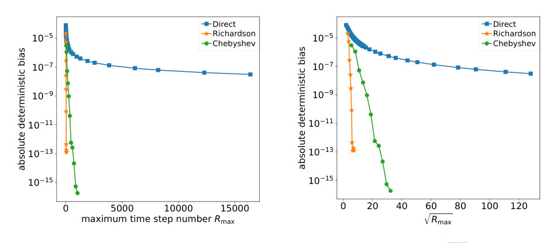
<figcaption class="paper-figure-caption"><b>Fig 2.</b> Fig. 1 shows the deterministic-bias reduction at fixed data points. The 𝑥axis is 𝑅max = max𝑗𝑅𝑗, the maximum number of time steps among the finite-step circuits used in the extrapolation, where 𝑠𝑗= 𝑇∕𝑅𝑗. The actual maximum single-run circuit depth is</figcaption>
</figure>
<figure class="paper-figure-card">
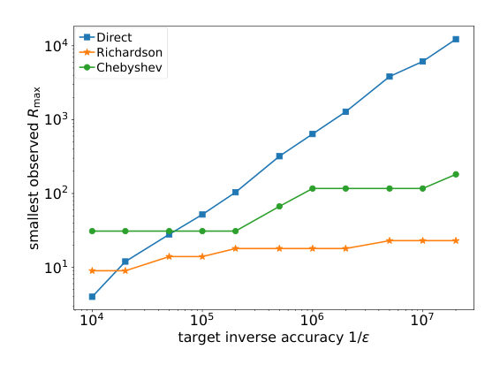
<figcaption class="paper-figure-caption"><b>Fig 3.</b> Figure 2: Hatano-Nelson edge observable. This is a log-log plot: the x-axis is the target inverse accuracy 1∕𝜖, and the y-axis is the smallest observed maximum step number 𝑅max needed to reach the target deterministic bias. The direct method follows the expected inverse-accuracy trend, while the extrapolated methods require much smaller maximum depths over the tested accuracy range. The final upward step in the Chebyshev curve is a discrete degree-selection effect.</figcaption>
</figure>
<figure class="paper-figure-card">
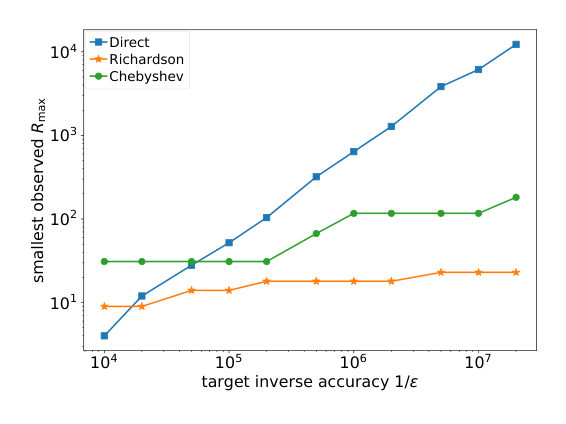
<figcaption class="paper-figure-caption"><b>Fig 4.</b> Fig. 2 inverts the previous comparison. For each target accuracy 𝜖, we record the smallest observed 𝑅max such that this precision is reached. The direct curve grows quickly as 1∕𝜖increases, consistent with first-order accuracy. The Richardson and Chebyshev curves do not change much. In particular, they are step-like because both 𝑚and 𝑅are integer-valued, but they remain far below the direct curve in the high-accuracy regime. The last visible upward step in the Chebyshev curve is a degree-selection effect. In the Hatano-Nelson data, the 𝑚= 4 Chebyshev interpolant has</figcaption>
</figure>
<figure class="paper-figure-card">
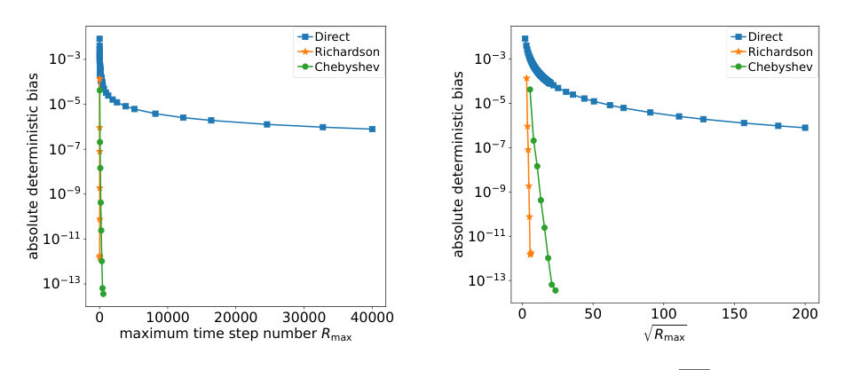
<figcaption class="paper-figure-caption"><b>Fig 5.</b> Figure 3: Convection-diffusion low-Fourier-shell observable. Both panels are semilogy plots: the y-axis is the absolute deterministic bias on a logarithmic scale, while the x-axis is linear. Panel (a) plots the data against 𝑅max, and panel (b) plots the same data against √</figcaption>
</figure>
</div>

<p><strong>Summary.</strong> The paper presents a method to drastically reduce the computational resources needed to solve linear differential equations using a one-ancilla quantum computer. By integrating classical extrapolation techniques with the quantum solver, the required circuit depth scales logarithmically with the inverse of the target accuracy. This breakthrough makes simulating complex physical dynamics, especially non-unitary ones, much more feasible for near-term quantum hardware.</p>
<p><strong>Why it may be interesting.</strong> This work directly tackles resource optimization for quantum simulation algorithms, which is critical for realizing fault-tolerant quantum computation by reducing required circuit depth for solving fundamental physical equations.</p>
<details>
<summary>Detailed structure</summary>
<p><strong>Main problem.</strong> The primary goal is to reduce the circuit depth required for a one-ancilla quantum solver of linear differential equations.</p>
<p><strong>Main result.</strong> By combining the quantum solver with classical step-size postprocessing techniques like extrapolation, the circuit depth scales down from $\mathcal{O}(1/\epsilon)$ to $\mathcal{O}(	ext{polylog}(1/\epsilon))$.</p>
<p><strong>Method.</strong> The approach uses Richardson or Chebyshev extrapolation on estimates derived from running the quantum solver at a logarithmic number of finite time steps. This requires advanced mathematical tools like holomorphic adjoint lifts for non-unitary dynamics.</p>
<p><strong>Model / system.</strong> The work addresses solving linear differential equations, including dissipative and non-unitary systems modeled by operators like $A = -iH - \sum D_j$. Examples include the Hatano-Nelson model (ODE) and convection-diffusion PDEs.</p>
<p><strong>Key observables.</strong> The observable estimated is an unnormalized expectation value $\langle\psi(T)| O|\psi(T)
angle$, specifically measuring low-Fourier-shell content for PDE examples.</p>
<p><strong>Important parameters / regimes.</strong> Target accuracy ($\epsilon$) and the required circuit depth (the resource being minimized).</p>
<p><strong>Assumptions / limitations.</strong> The reduction relies on obtaining necessary regularity estimates through a holomorphic adjoint lift, which is crucial for non-unitary evolution maps. The one-step block underlying the algorithm is assumed to be first-order accurate in step size.</p>
<p><strong>Figures summary.</strong> Figures compare resource scaling: direct simulation requires depth $\sim 1/\epsilon$, while extrapolation methods achieve much smaller depths ($ ext{polylog}(1/\epsilon)$), demonstrating superior convergence rates for accuracy improvement.</p>
<p><strong>Paper structure.</strong> The paper introduces the problem, details the one-ancilla solver structure, develops the theoretical framework using classical postprocessing (extrapolation) to mitigate discretization errors, and validates the improved scaling with numerical examples on ODEs and PDEs.</p>
</details>
<details>
<summary>Abstract</summary>
<p>Solving linear differential equations is a fundamental task in scientific computing and an important primitive for quantum computing. A recent one-ancilla quantum differential equation solver provides a hardware-friendly and locality-preserving approach with provable performance guarantees, making it highly suitable for the early fault-tolerant and near-term regimes. Its simple circuit structure comes with a natural trade-off: the maximum single-run circuit depth scales as $O (1/ε)$ in the target accuracy $ε$. In this work, we reduce this depth by combining the solver with classical step-size postprocessing. By running the one-ancilla solver at a logarithmic number of finite time step sizes and using classical post-processing to cancel leading discretization errors, we reduce the maximum single-run circuit depth to $O(\mathrm{polylog}(1/ε))$ without adding quantum ancillae or sacrificing locality. Technically, extending extrapolation ideas beyond Hamiltonian and Lindbladian dynamics requires regularity estimates for observable maps under nonunitary evolution, which we obtain through a holomorphic extension of the adjoint evolution. Numerical experiments on the Hatano-Nelson model (ODE) and the convection-diffusion equation (PDE) demonstrate the effectiveness of the approach.</p>
</details>
<p><sub><a href="#top">↑ back to top</a></sub></p>

<p><a id="paper-2607.06994"></a></p>
<h3 id="operator-frame-geometry-of-non-compact-quantum-systems-with-frame-vacuum-phase-transitions"><a href="http://arxiv.org/abs/2607.06994v1">Operator-frame geometry of non-compact quantum systems with frame-vacuum phase transitions</a></h3>
<p><strong>Authors:</strong> Satoshi Tanaka, Gonzalo Ordonez, Masatoshi Kubota, Hiroto Nakano, Kazuki Kanki<br>
<strong>Type:</strong> theory · <strong>Category:</strong> other · <strong>PDF:</strong> <a href="https://arxiv.org/pdf/2607.06994v1">https://arxiv.org/pdf/2607.06994v1</a><br>
<strong>Analysis basis:</strong> full PDF text, analyzed in chunks
<strong>Topic relevance:</strong> <code>Keldysh / 2PI / non-Gaussian methods</code> <strong>1/5</strong> · <code>correlated / nonlocal dissipation</code> <strong>1/5</strong> · <code>driven-dissipative phase transition</code> <strong>1/5</strong> · <code>methods for driven-dissipative</code> <strong>1/5</strong></p>
<div class="figure-strip-hint">↔ Scroll figures horizontally</div>
<div class="paper-figures-scroll">
<figure class="paper-figure-card">
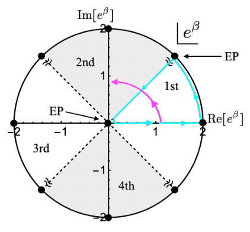
<figcaption class="paper-figure-caption"><b>Fig 1.</b> FIG. 1. Stable-unstable domain phase diagram in the com- plex eβ plane. The blank regions represent stable domains in which the frame vacuum is normalizable, while the shaded regions correspond to unstable domains where the Hilbert- space norm is no longer real positive. The norm diverges on the Stokes lines. The dotted lines indicate the Stokes lines separating different analytic sectors. The exceptional points are indicated by the black dots. The Stokes lines divide the complex plane into four Riemann sheets, labeled in the fig- ure. Representative trajectories connecting stable and unsta- ble domains are also shown (blue and magenta curves); the physical realization constructing the...</figcaption>
</figure>
<figure class="paper-figure-card">
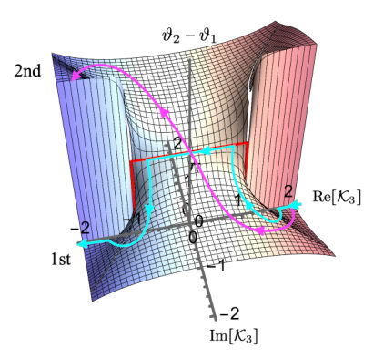
<figcaption class="paper-figure-caption"><b>Fig 2.</b> FIG. 3. (Color online) Continuous trajectories in the com- plex K3 plane encircling the exceptional points at K3 = ±k∥ on the first Riemann sheet: the blue curve runs on the first Riemann sheet, and the magenta curve runs from the first to the second Riemann sheets crossing over the Stokes line. A finite imaginary part ImK3, induced by dissipation, allows the system to bypass the exceptional points and cross the Stokes lines smoothly. The corresponding trajectories are also drawn in Fig. 1.</figcaption>
</figure>
<figure class="paper-figure-card">
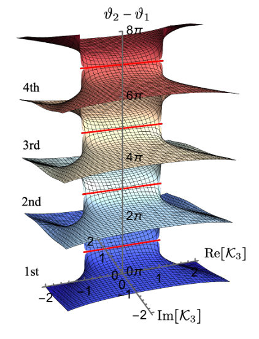
<figcaption class="paper-figure-caption"><b>Fig 3.</b> FIG. 2. (Color online) Argument of the complex squeezing parameter eβ, 4 Imβ = ϑ2 −ϑ1, plotted on the complex K3 plane for k∥= 1. The exceptional points at K3 = ±k∥appear as branch points, around which the phase of eβ exhibits a four- cycle (Z4) monodromy. Each sector corresponds to a distinct Riemann sheet in the analytically continued parameter space. The Stokes lines shown by the red lines, located at ϑ2 −ϑ1 = π(2l + 1) (l ∈Z), emanate from the exceptional points and become branch cuts separating stable and unstable domains.</figcaption>
</figure>
</div>

<p><strong>Summary.</strong> This paper develops an operator-based formulation of quantum geometry designed specifically for non-compact bosonic systems undergoing vacuum instability. By constructing the 'operator-frame bundle' and defining a Quantum Geometric Tensor (QGT), the authors successfully extend geometric concepts like Berry curvature across phase transitions where standard state-space methods break down. This provides a universal tool for analyzing quantum dynamics in highly unstable or open environments.</p>
<p><strong>Why it may be interesting.</strong> This work provides a powerful, mathematically rigorous framework for analyzing quantum dynamics and geometry in regimes (like vacuum decay or strong coupling) where standard quantum field theory tools fail due to state non-normalizability.</p>
<details>
<summary>Detailed structure</summary>
<p><strong>Main problem.</strong> The primary challenge is developing a robust geometric description of quantum systems when vacuum instability renders conventional state-space quantum geometry ill-defined.</p>
<p><strong>Main result.</strong> The authors introduce the operator-space Quantum Geometric Tensor (QGT), which provides a consistent, analytically continuous description of quantum geometry across phase transitions involving vacuum instabilities.</p>
<p><strong>Method.</strong> They reformulate quantum geometry by analyzing the structure of canonical operator frames and defining an Ehresmann connection on the associated principal bundle, bypassing reliance on normalizable state vectors.</p>
<p><strong>Model / system.</strong> The work applies to non-compact bosonic quantum systems, initially focusing on a single mode but extending to coupled systems using Feshbach projection techniques. The geometry is analyzed in terms of operator commutation relations rather than state expectation values.</p>
<p><strong>Key observables.</strong> Operator-space Quantum Geometric Tensor (QGT), Berry connection/curvature, and the effective Liouvillian $\mathcal{L}_{	ext{eff}}(z)$.</p>
<p><strong>Important parameters / regimes.</strong> Complexified squeezing-parameter plane; coupling constants ($k_1, k_2, k_3, g$); system parameters $z$.</p>
<p><strong>Assumptions / limitations.</strong> The formulation assumes that the underlying algebraic structure defined by canonical operator frames remains well-defined even when the physical state space collapses or becomes non-normalizable.</p>
<p><strong>Figures summary.</strong> Figure 3 illustrates continuous trajectories in the complex K3 plane showing smooth passage across Stokes lines via controlled dissipation, demonstrating QGT analyticity.</p>
<p><strong>Paper structure.</strong> The paper progresses from establishing the breakdown of standard quantum geometry (Chunk 1) to analyzing the underlying operator algebra and its principal bundle structure using an Ehresmann connection (Chunk 2). It then details the derivation of the QGT in rigged Hilbert spaces (Chunk 3), concluding with applications to open systems via Feshbach projection methods (Chunk 4).</p>
</details>
<details>
<summary>Abstract</summary>
<p>We formulate the geometric structure of non-compact bosonic quantum systems in regimes where vacuum instability renders the relevant quantum states non-normalizable, causing conventional state-space quantum geometry -- described by the Berry connection, curvature, and quantum metric -- to become ill-defined. To overcome this breakdown, we develop a formulation of quantum geometry at the level of canonical operator frames, allowing for complexified Bogoliubov-Valatin transformations that lift the requirement that creation operators be Hermitian conjugates of annihilation operators. Canonical operator frames are defined as choices of bosonic creation and annihilation operators realizing the canonical commutation relations. A natural equivalence relation among such frames generalizes the phase ambiguity of quantum states and determines a parameter space that analytically extends the stable-regime parameter space. The space of canonical operator frames forms a principal bundle over parameter space -- the operator-frame bundle -- equipped with a natural Ehresmann connection that defines parallel transport while preserving the canonical commutation relations. In the stable regime, this construction reduces to the Berry connection, while more generally it yields a well-defined operator-space quantum geometric tensor (QGT) that remains valid across vacuum instabilities. Using the framework of rigged Hilbert spaces, we define a notion of quantum frame vacuum and obtain a consistent state-space QGT. Focusing on a single bosonic mode, we demonstrate analyticity of the QGT across the quantum frame-vacuum phase transition and present the corresponding phase diagram on the complexified squeezing-parameter plane. We further introduce a realistic physical setting that allows continuous paths connecting stable and unstable regimes, along which the QGT evolves smoothly across Stokes lines.</p>
</details>
<p><sub><a href="#top">↑ back to top</a></sub></p>

<p><a id="paper-2607.07544"></a></p>
<h3 id="strain-tunable-charge-localization-coupled-to-complex-magnetic-orders-in-eualmath719math"><a href="http://arxiv.org/abs/2607.07544v1">Strain-tunable charge localization coupled to complex magnetic orders in EuAl$_4$</a></h3>
<p><strong>Authors:</strong> M. Baumgartner, Xunyang Hong, Tianren Wang, Fazhi Yang, Yuetong Wu, Junzhang Ma, Tian Shang, J. Oppliger, J. Küspert, M. Hücker, O. Ivashko, F. Igoa Saldaña, M. v. Zimmermann, S. Pyon, K. Kudo, M. Nohara, P. Sačer, A. Akrap, N. Barišić, M. Novak, Qisi Wang, J. Chang<br>
<strong>Type:</strong> experiment · <strong>Category:</strong> strongly correlated electrons · <strong>PDF:</strong> <a href="https://arxiv.org/pdf/2607.07544v1">https://arxiv.org/pdf/2607.07544v1</a><br>
<strong>Analysis basis:</strong> full PDF text, analyzed in chunks
<strong>Topic relevance:</strong> <code>Frenkel-Kontorova</code> <strong>1/5</strong> · <code>analog quantum simulation</code> <strong>1/5</strong> · <code>exotic spin models in light-matter</code> <strong>1/5</strong> · <code>spintronics-quantum-optics interface</code> <strong>1/5</strong></p>
<div class="figure-strip-hint">↔ Scroll figures horizontally</div>
<div class="paper-figures-scroll">
<figure class="paper-figure-card">
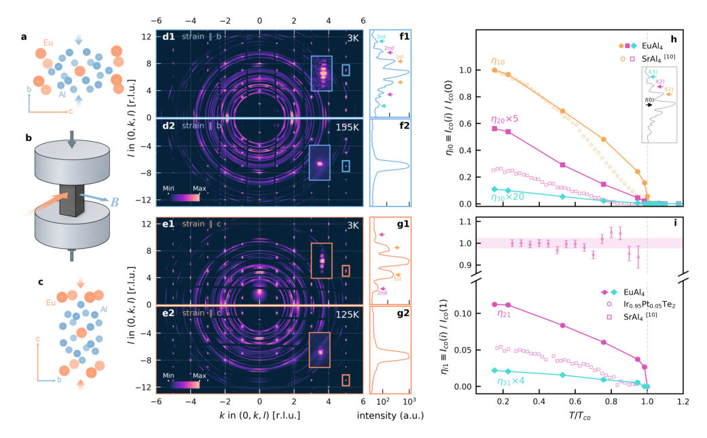
<figcaption class="paper-figure-caption"><b>Fig 1.</b> FIG. 1. Charge ordering in EuAl4. (a, c) Sketch of the EuAl4 crystal structure and the vertical applied uniaxial pressure from the strain cell shown in (b). Orange arrow depicts the in-coming beam, with horizontal magnetic field B (blue arrow) perpendicular to it. (d1, d2, e1, e2) Reconstructed X-ray diffraction intensity within the (0, k, ℓ) plane at indicated temperatures, with crystal orientation and applied pressure depicted in (a, c) respectively. The insets display the raw diffraction data zoomed in around fundamental Bragg reflections at indicated regions. Charge order manifests through incommensurate reflections along the reciprocal c-axis direction. (f1, f2, g1, g2) Line profiles...</figcaption>
</figure>
<figure class="paper-figure-card">
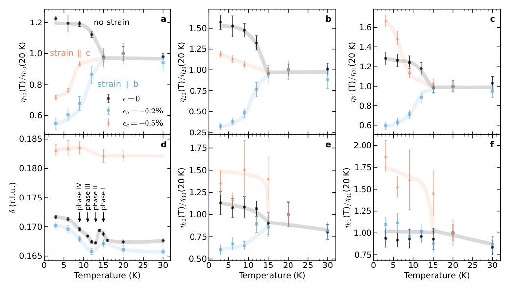
<figcaption class="paper-figure-caption"><b>Fig 2.</b> FIG. 2. Charge localization inside the magnetic phases of EuAl4. (a-c,e,f) Temperature dependence of η10, η20, η30, η21 and η31 for strains (see method section) as indicated, normalized to their respective values at 20 K in the normal state. An increase (decrease) in η21 and η31 corresponds to stronger (weaker) charge localization. (d) Charge incommensurability, in reciprocal lattice units (r.l.u.), as a function of temperature for the applied strain as indicated in (a). The arrows show the temperatures where the system enters specific magnetic phases (see main text for description). Solid lines are guides to the eye. Error bars denote the standard error of the mean (SEM) extracted from...</figcaption>
</figure>
<figure class="paper-figure-card">
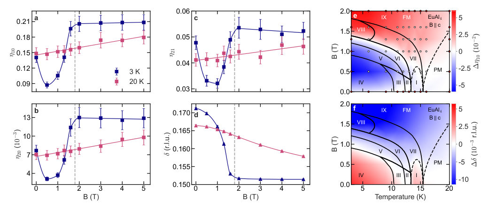
<figcaption class="paper-figure-caption"><b>Fig 3.</b> FIG. 3. Coupling of spin and charge order under magnetic field. (a-c) Magnetic field (B ∥c) dependence of the charge localization parameter η10, η20 and η21 at representative temperatures of 3 K and 20 K. (d) Field evolution of the charge order incommensurability δ for temperatures as indicated. Error bars in (a-d) represent the standard error of the mean. The vertical dashed line marks the onset of the ferromagnetic ground state. (e,f) display the charge ordering η10 and the charge incommensurability δ normalized at 20 K and 0 T, across the temperature-field parameter space, respectively. The false-color profiles are obtained from linear interpolation of a discrete data grid indicated by...</figcaption>
</figure>
</div>

<p><strong>Summary.</strong> This work comprehensively studies the interplay between charge localization and complex magnetic orders in EuAl4 using high-energy X-ray diffraction. By applying uniaxial strain and magnetic fields, the researchers demonstrated that this coupling is highly sensitive to the symmetry of the applied stress. The findings reveal a new route for controlling electronic states by manipulating the underlying spin structure.</p>
<p><strong>Why it may be interesting.</strong> The direct tunability of charge/spin coupling via mechanical strain provides an experimental playground to study emergent quantum phases, which is relevant for understanding correlated electron physics in novel materials.</p>
<details>
<summary>Detailed structure</summary>
<p><strong>Main problem.</strong> The study investigates how charge localization couples to complex magnetic orders, such as skyrmion lattices or chiral spin structures, in the material EuAl4.</p>
<p><strong>Main result.</strong> The coupling between spin and charge order is highly tunable by external stimuli; uniaxial strain along the charge-order propagation direction enhances localization, while perpendicular strain weakens it.</p>
<p><strong>Method.</strong> High-energy X-ray diffraction (XRD) measurements were performed under applied magnetic fields and controlled uniaxial pressures to probe structural changes related to electronic ordering.</p>
<p><strong>Model / system.</strong> The physical system is the compound EuAl4, which exhibits both charge density wave (CDW) behavior and rich sequences of antiferromagnetic spin structures. The analysis focuses on quantifying the degree of charge localization through harmonic satellite reflections.</p>
<p><strong>Key observables.</strong> Charge localization parameters ($\eta_{21}, \eta_{31}$), charge incommensurability ($\delta$), and structural Bragg peak shifts used to quantify strain.</p>
<p><strong>Important parameters / regimes.</strong> Applied uniaxial pressure (along/perpendicular to CDW propagation) and external magnetic field strength ($B$).</p>
<p><strong>Assumptions / limitations.</strong> The coupling mechanism is assumed to be rooted in degrees of freedom residing on the same Eu site, suggesting it goes beyond conventional electron-phonon coupling.</p>
<p><strong>Figures summary.</strong> Figures illustrate temperature dependence of charge ordering harmonics ($\eta_{i0}$) under varying strain and magnetic fields, demonstrating how external parameters modulate the spin-charge coupling strength.</p>
<p><strong>Paper structure.</strong> The paper establishes the experimental methodology using XRD to measure structural changes (strain) and electronic order (CDW satellites). It then systematically explores the interplay by measuring charge localization as a function of temperature, uniaxial strain, and magnetic field, concluding with implications for designing symmetry-breaking states.</p>
</details>
<details>
<summary>Abstract</summary>
<p>Charge localization is particularly interesting when coupled to antiferromagnetic spin structures. Coupled spin-charge orders are well established in elemental chromium and correlated oxide superconductors, yet the interplay between charge order and more complex magnetic textures -- such as skyrmion lattices and chiral spin structures -- remains largely unexplored. Here we report a comprehensive study of how charge localization couples to the unusually rich sequence of magnetic phases in EuAl$_4$. Using x-ray diffraction under applied magnetic field and uniaxial pressure, we demonstrate a direct coupling between the charge and spin order parameters. In the absence of external stimuli, charge localization is markedly enhanced upon entering the magnetically ordered phases. Strikingly, this effect is highly susceptible to strain: uniaxial pressure applied along the charge-order propagation direction further enhances localization, whereas pressure applied perpendicular to it weakens it. Application of magnetic field reveals both competitive and possible collaborative interactions between spin and charge ordering.This flexible coupling between spin and charge ordering opens a new route to designing symmetry-breaking states. Chiral charge order may for example be patterned from spin structures with that symmetry.</p>
</details>
<p><sub><a href="#top">↑ back to top</a></sub></p>

<p><a id="paper-2607.07629"></a></p>
<h3 id="analysis-of-polarization-drift-of-optical-signals-over-deployed-aerial-inground-fiber-connections"><a href="http://arxiv.org/abs/2607.07629v1">Analysis of polarization drift of optical signals over deployed aerial-inground fiber connections</a></h3>
<p><strong>Authors:</strong> Aneesh Ramaswamy, Nageswara S. V. Rao, Joseph C. Chapman, Muneer Alshowkan<br>
<strong>Type:</strong> both · <strong>Category:</strong> quantum information and computing · <strong>PDF:</strong> <a href="https://arxiv.org/pdf/2607.07629v1">https://arxiv.org/pdf/2607.07629v1</a><br>
<strong>Analysis basis:</strong> full PDF text, analyzed in chunks
<strong>Topic relevance:</strong> <code>entanglement &amp; information structure</code> <strong>1/5</strong> · <code>interference shaping light</code> <strong>1/5</strong> · <code>quantum optics experiment</code> <strong>1/5</strong></p>
<div class="figure-strip-hint">↔ Scroll figures horizontally</div>
<div class="paper-figures-scroll">
<figure class="paper-figure-card">
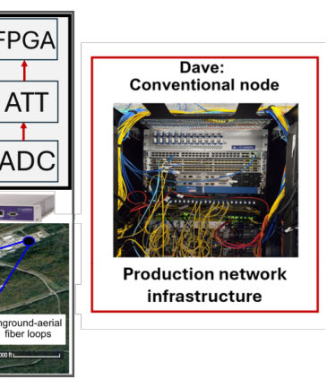
<figcaption class="paper-figure-caption"><b>Fig 1.</b> Fig. 1. Polarized signal measurement and data collection setup (Top left inset). Map of the ORNL fiber infrastructure (bottom inset) that the laser traverses. The setup is housed in the server node Dave and the FPGA is connected to a Linux host. Blue lines: communication channels carrying the laser. Red lines: analog signals. Dotted lines: digital signals. CW: continuous-wave laser. AMP: amplifier. PBS: Fiber polarization beam splitter. PM: optical power meter. ADC: analog-to-digital converter. ATT: electrical attenuator.</figcaption>
</figure>
<figure class="paper-figure-card">
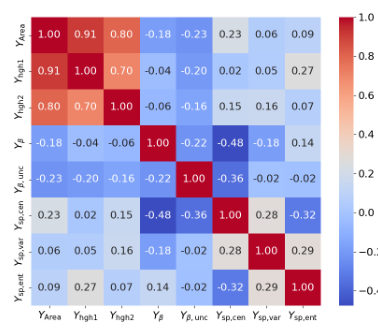
<figcaption class="paper-figure-caption"><b>Fig 2.</b> Fig. 2. Seasonal trends of polarization drift FFT variables 𝑌shown using calculations of Pearson’s correlation.</figcaption>
</figure>
<figure class="paper-figure-card">
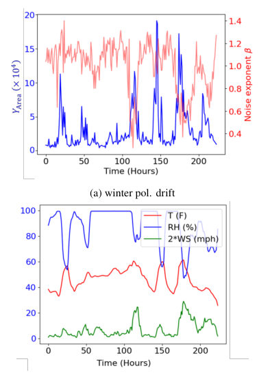
<figcaption class="paper-figure-caption"><b>Fig 3.</b> Fig. 3. A week of polarization drift in winter (a) and summer (b) showing the FFT spectral height 𝑌Area and the beta-coefficient 𝛽. Corresponding weather measurements (𝑋= 𝑇, 𝐻, 𝑊) are also shown for winter (c) and summer (d).</figcaption>
</figure>
<figure class="paper-figure-card">
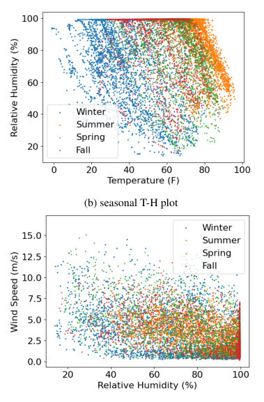
<figcaption class="paper-figure-caption"><b>Fig 4.</b> Fig. 4. (a) Log plot of the exponentially weighted means of temperature, relative humidity, and wind speed measurements from 12/18/24 to 11/20/2025. (b-d) Weather feature space plots for different seasons.</figcaption>
</figure>
<figure class="paper-figure-card">
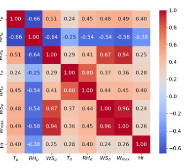
<figcaption class="paper-figure-caption"><b>Fig 5.</b> Fig. 5. Seasonal trends of weather variables 𝑋∈{𝑇𝑟, 𝐻𝑟, 𝑊𝑟, Hr} shown using calculations of Pearson’s correlation.</figcaption>
</figure>
</div>

<p><strong>Summary.</strong> This research analyzes polarization drift in long-haul optical fibers by correlating high-resolution spectral features extracted from 1550-nm signals with environmental data like temperature and humidity. By combining extensive field measurements, machine learning regression, and advanced theoretical modeling of birefringence accumulation, the authors provide a robust framework for predicting link degradation, which is critical for deploying quantum communication networks.</p>
<p><strong>Why it may be interesting.</strong> This work directly addresses the practical limitations of deploying quantum communication networks over real-world infrastructure by quantifying and predicting environmental noise sources affecting polarization states. The combination of advanced signal processing (FFT features) with rigorous fiber optics theory is highly relevant to open quantum systems in noisy environments.</p>
<details>
<summary>Detailed structure</summary>
<p><strong>Main problem.</strong> The primary challenge addressed is polarization drift of optical signals over deployed aerial-inground fiber connections, which severely degrades the performance and fidelity of quantum communication links.</p>
<p><strong>Main result.</strong> The study established strong diurnal and seasonal correlations between measurable spectral features (like spectral area) and environmental factors ($T$, $H$, $W$), providing a framework for weather-aware prediction of polarization drift. The theoretical work also provided explicit mathematical tools using BCH formulas to model drift accumulation across fiber segments.</p>
<p><strong>Method.</strong> The approach combines extensive field measurements analyzed via Fast-Fourier Transform (FFT) feature extraction with advanced statistical modeling, including Random Forest regression and Principal Component Analysis (PCA), alongside rigorous theoretical derivations using stochastic differential equations and the Magnus expansion.</p>
<p><strong>Model / system.</strong> The system is a 15-km hybrid aerial-inground fiber connection transmitting a classical 1550-nm signal used to characterize quantum link quality. The underlying physics models polarization drift as unitary rotations governed by birefringence ($\zeta_t$), which depends on temperature and mechanical stress.</p>
<p><strong>Key observables.</strong> Spectral area, spectral centroid, spectral variance, spectral entropy, $eta$-exponent of the power spectrum, entanglement throughput, and fidelity.</p>
<p><strong>Important parameters / regimes.</strong> Temperature ($T$), relative humidity ($H$), wind speed ($W$), 15-km link length, and measurement time scales (diurnal/seasonal variations).</p>
<p><strong>Assumptions / limitations.</strong> Assumptions include negligible Polarization Dependent Loss (PDL) and the use of stochastic treatments to manage multi-segment complexity in the theoretical modeling.</p>
<p><strong>Figures summary.</strong> Figures illustrate the measurement setup, seasonal trends of polarization drift FFT variables correlated with environment, and residual plots showing multiplicative bias in spectral area estimation.</p>
<p><strong>Paper structure.</strong> The paper progresses from empirical data analysis (measuring spectral features vs. weather) to developing a complex theoretical model for birefringence accumulation across fiber segments using rotation operators, culminating in a predictive framework for quantum link state estimation.</p>
</details>
<details>
<summary>Abstract</summary>
<p>Polarization measurements of a classical 1550-nm signal are collected and analyzed on 15-km hybrid aerial-inground fiber connections over 11 months. The spectral area and spectral moments9 of mHz-resolution Fast-Fourier-Transform (FFT) of these measurements are extracted, and related to temperature, humidity, wind speed, and time of day. Spectral area correlations show a strong11 diurnal structure: daytime maxima align with temperatures/wind speed peaks and humidity dips, with lower levels during the night. These diurnal patterns also show seasonality, with higher13 mean and variance in summer than winter. A random forest regressor is used to estimate FFT features from environmental measurements, informed by a theoretical model</p>
</details>
<p><sub><a href="#top">↑ back to top</a></sub></p>

<p><a id="paper-2607.07352"></a></p>
<h3 id="bayesian-learning-of-distance-metrics-beyond-rmsd-for-biomolecule-alignment-clustering-and-domain-identification"><a href="http://arxiv.org/abs/2607.07352v1">Bayesian Learning of Distance Metrics Beyond RMSD for Biomolecule Alignment, Clustering, and Domain Identification</a></h3>
<p><strong>Authors:</strong> Saumyak Mukherjee, Gerhard Hummer<br>
<strong>Type:</strong> theory · <strong>Category:</strong> statistical mechanics · <strong>PDF:</strong> <a href="https://arxiv.org/pdf/2607.07352v1">https://arxiv.org/pdf/2607.07352v1</a><br>
<strong>Analysis basis:</strong> full PDF text, analyzed in chunks
<strong>Topic relevance:</strong> <code>Keldysh / 2PI / non-Gaussian methods</code> <strong>1/5</strong> · <code>driven-dissipative phase transition</code> <strong>1/5</strong> · <code>methods for driven-dissipative</code> <strong>1/5</strong></p>
<div class="figure-strip-hint">↔ Scroll figures horizontally</div>
<div class="paper-figures-scroll">
<figure class="paper-figure-card">
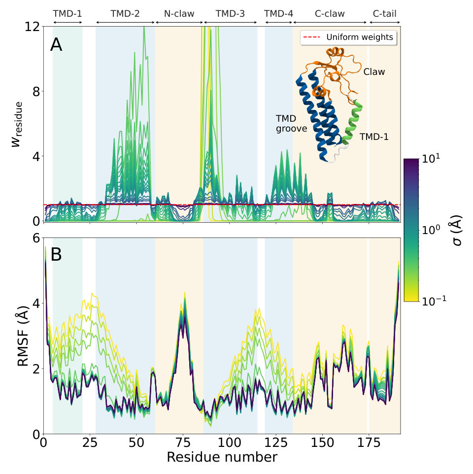
<figcaption class="paper-figure-caption"><b>Fig 1.</b> Figure 1: The σ sweep for SND3 structural alignment is shown in two panels. (A) Per- residue weight wresidue (mean atom weight of a residue, scaled so a uniform weight equals one) as a function of residue number for σ = 0.1–10.0 ˚A, colored by σ (colorbar). Do- main shading indicates TMD-1 (green), TMD-2/TMD-3/TMD-4 (blue, TM groove), and N-claw/C-claw/C-tail (orange). The SND3 structure (PDB: 9I78), colored according to the domains, is shown as an inset. As σ decreases, weight concentrates progressively in the TM groove. (B) Per-residue RMSF for the same σ values. The profile is independent of σ (other than at very low σ, due to over-regularization), confirming that the weight...</figcaption>
</figure>
<figure class="paper-figure-card">
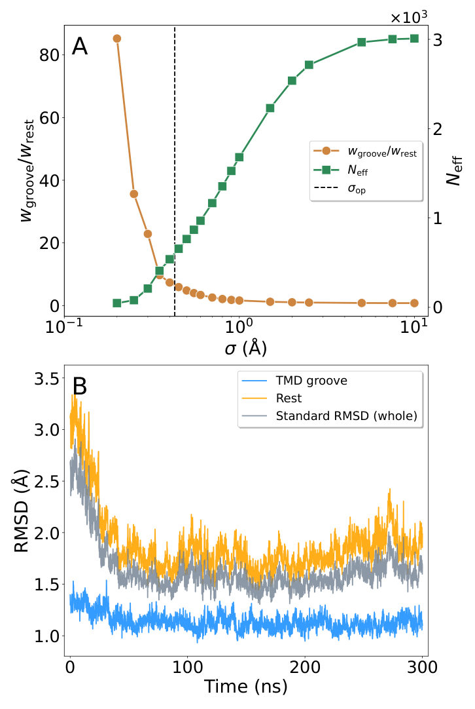
<figcaption class="paper-figure-caption"><b>Fig 2.</b> Figure 2: Optimal σ selection and alignment quality are shown in two panels. (A) Weight ratio wgroove/wrest (red, left axis) and effective atom count neff (green, right axis) are plotted versus σ (log scale). At σop = 0.43 ˚A (dashed line), the ratio is 6.5 and neff = 604. (B) RMSD time series over the 300 ns trajectory for the TM groove (blue), the non-groove region (orange), and overall standard RMSD (gray). The groove RMSD is substantially lower and less variable than the others.</figcaption>
</figure>
<figure class="paper-figure-card">
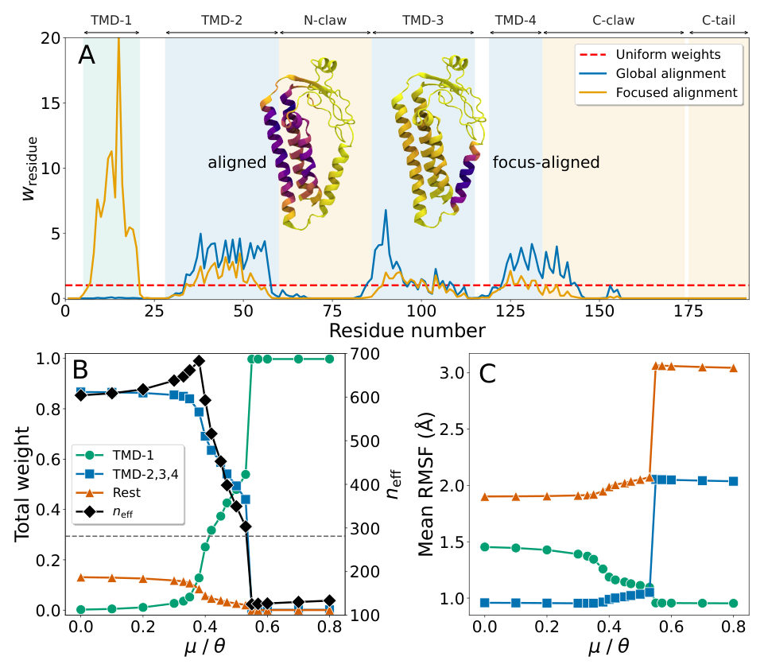
<figcaption class="paper-figure-caption"><b>Fig 3.</b> Figure 3: Results of focused alignment of SND3 onto TMD-1 are shown in three panels. (A) Per-residue weights are plotted against residue numbers. Global alignment at σop = 0.43 ˚A (blue) and focused alignment at (µ/θ)op = 0.53 (orange) are shown simultaneously along with the uniform baseline (red dashed line). The average structures from each alignment are colored by the weights on each atom, with darker shades denoting higher weights. (B) Total weight fractions on TMD-1 (green), TM groove (blue), and the rest (orange) are plotted as functions of µ/θ. The effective atom count neff (black, right axis) and the TMD-1 size |D| = 281 (dashed) are overlaid. (C) Mean RMSF of each segment from the...</figcaption>
</figure>
<figure class="paper-figure-card">
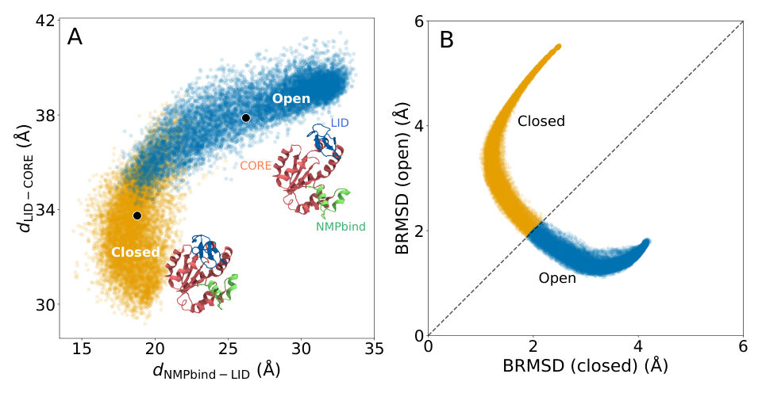
<figcaption class="paper-figure-caption"><b>Fig 4.</b> Figure 4: Conformational clustering of the 19,691-frame ADK DIMS ensemble (K = 2, τop = 5.0 ˚A2, σ = 4.0 ˚A). (A) Each frame placed by its order parameters dNMPbind−LID and dLID−CORE, colored by hard cluster assignment: orange (closed) and blue (open). Black circles mark the two cluster centers, shown colored by domain (CORE red, LID blue, NMPbind green). (B) The same frames placed by their weighted BRMSD to the closed center (abscissa) and to the open center (ordinate), each computed with that cluster’s own weight vector. The dashed line marks equal BRMSD from both clusters.</figcaption>
</figure>
<figure class="paper-figure-card">
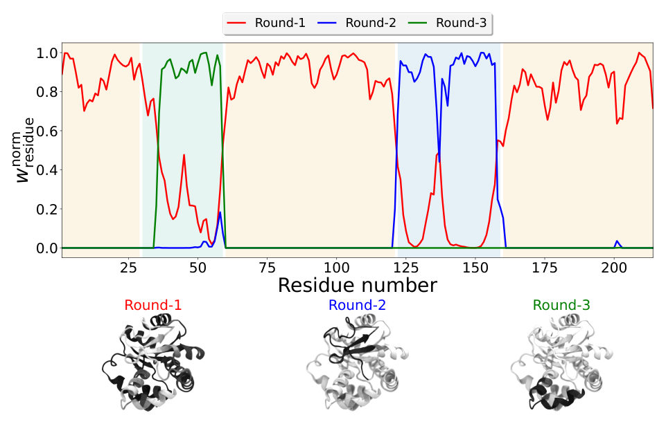
<figcaption class="paper-figure-caption"><b>Fig 5.</b> Figure 5: Rigid domain identification for ADK by sequential peeling on 28,282 FRODA backbone frames (856 atoms, σop = 3.0 ˚A). The per-residue weight profiles wnorm residue (mean atom weight of a residue, normalized within each round to its maximum) for the three peeling steps are overlaid: Round-1 (red, CORE), Round-2 (blue, LID), and Round-3 (green, NMPbind), with domain shading. The corresponding average structures, colored by weight, are shown below. Domains are detected in order of decreasing global rigidity.</figcaption>
</figure>
</div>

<p><strong>Summary.</strong> This paper develops the Bayes-optimal RMSD (BRMSD) metric to overcome the limitations of standard structural comparison metrics for biomolecules. By optimizing per-atom weights using a Bayesian framework, BRMSD effectively down-weights highly flexible regions and concentrates analysis power on the stable, rigid functional core of proteins. This provides robust tools for alignment, clustering, and domain identification in molecular dynamics simulations.</p>
<p><strong>Why it may be interesting.</strong> While primarily applied to biophysics, the underlying mathematical machinery—optimizing weights based on local fluctuation statistics via free energy minimization and entropy regularization—shares conceptual links with statistical mechanics approaches used in analyzing complex many-body systems or disordered materials.</p>
<details>
<summary>Detailed structure</summary>
<p><strong>Main problem.</strong> Standard RMSD fails for biomolecules because it weights all atoms equally, allowing flexible regions to dominate the metric while ignoring rigid functional cores.</p>
<p><strong>Main result.</strong> The proposed Bayes-optimal RMSD (BRMSD) significantly reduces structural deviation metrics compared to standard RMSD on benchmark systems like SND3. It successfully identifies and focuses analysis on the stable, rigid core of proteins.</p>
<p><strong>Method.</strong> The authors introduce a Bayesian framework that optimizes per-atom weights by maximizing a posterior derived from minimizing an effective free energy functional combining Mean-Square Deviation (MSD) and relative entropy regularization.</p>
<p><strong>Model / system.</strong> The methods are applied to biomolecules studied via Molecular Dynamics (MD) simulations, specifically benchmarking on the SND3 translocon protein and adenylate kinase. The framework is designed for structural alignment, clustering, and domain identification within these systems.</p>
<p><strong>Key observables.</strong> BRMSD value, per-atom weights ($w_\alpha$), cluster responsibilities ($q(a|i)$), and the Calinski–Harabasz (CH) index for clustering quality.</p>
<p><strong>Important parameters / regimes.</strong> The position-fluctuation parameter $\sigma$ controls the weight suppression threshold; parameters like $\mu/	heta$ control domain focusing strength, and window size $W_{op}$ is used for trajectory smoothing.</p>
<p><strong>Assumptions / limitations.</strong> Minimizing the free energy functional $G$ may only yield a local minimum, necessitating multiple random restarts. The method assumes that weight optimization can effectively separate rigid core contributions from flexible noise.</p>
<p><strong>Figures summary.</strong> Figures show BRMSD significantly lower than standard RMSD over time; they also illustrate the anticorrelation between high-RMSF residues and low optimized weights, confirming domain identification via weight concentration.</p>
<p><strong>Paper structure.</strong> The paper introduces the BRMSD framework by defining the free energy functional $G$. It then details specialized modules for focused alignment (adding a concentration penalty), trajectory smoothing (using windowed sums), soft K-means clustering (introducing responsibilities), and rigid domain identification (via sequential peeling).</p>
</details>
<details>
<summary>Abstract</summary>
<p>Root-mean-square deviation (RMSD) is the standard metric of structural comparison in molecular dynamics (MD) simulations. In its conventional form, RMSD assigns equal weight to all atoms regardless of mobility. Hence, flexible loops and disordered regions can dominate a global RMSD, while the rigid functional core contributes negligibly to the overall metric. To address this issue, we introduce the Bayes-optimal RMSD (BRMSD), which optimizes per-atom weights jointly with structural averages by maximizing a Bayesian posterior. In a trade-off between low RMSD and weight uniformity, a position-fluctuation parameter $σ$ controls the transition from classical RMSD ($σ\to \infty$) to a progressive focus on a rigid core ($σ\to 0$). The BRMSD framework supports analysis modules for structural alignment, focused alignment onto a user-specified domain, trajectory smoothing, soft $K$-means conformational clustering, and rigid-domain identification. These modules are implemented in the open-source Python package BRMSD (https://github.com/bio-phys/BRMSD) and benchmarked on two MD systems, the endoplasmic reticulum translocon-associated protein SND3 and the phosphotransferase adenylate kinase.</p>
</details>
<p><sub><a href="#top">↑ back to top</a></sub></p>

<p><a id="paper-2607.07307"></a></p>
<h3 id="magnetocaloric-properties-of-centered-molecular-quantum-spin-systems"><a href="http://arxiv.org/abs/2607.07307v1">Magnetocaloric properties of centered molecular quantum spin systems</a></h3>
<p><strong>Authors:</strong> H. Meel, J. Schnack<br>
<strong>Type:</strong> theory · <strong>Category:</strong> other · <strong>PDF:</strong> <a href="https://arxiv.org/pdf/2607.07307v1">https://arxiv.org/pdf/2607.07307v1</a><br>
<strong>Analysis basis:</strong> full PDF text, analyzed in chunks
<strong>Topic relevance:</strong> <code>analog quantum simulation</code> <strong>1/5</strong> · <code>exotic spin models in light-matter</code> <strong>1/5</strong> · <code>spintronics-quantum-optics interface</code> <strong>1/5</strong></p>
<div class="figure-strip-hint">↔ Scroll figures horizontally</div>
<div class="paper-figures-scroll">
<figure class="paper-figure-card">
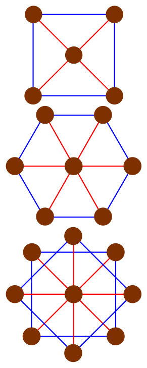
<figcaption class="paper-figure-caption"><b>Fig 1.</b> Figure 1. Investigated molecular structures: centered square, centered hexagon, centered double pyramid. Spins interact via two Heisenberg exchange interactions: J1 (blue) on the squares and the hexagon, J2 (red) center spin with all other spins.</figcaption>
</figure>
<figure class="paper-figure-card">
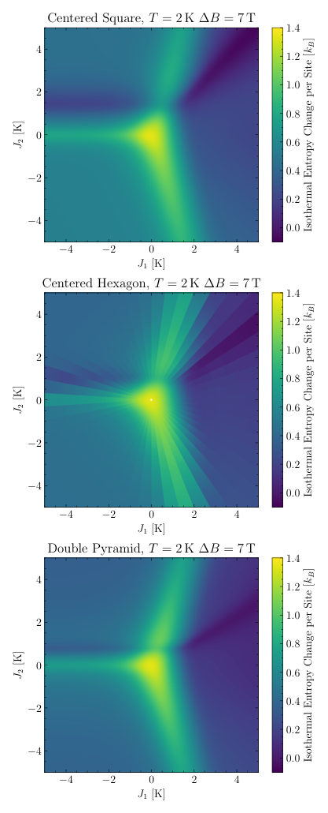
<figcaption class="paper-figure-caption"><b>Fig 2.</b> Figure 3. Isothermal entropy change per site when going from B = 7 T to B = 0 at a temperature of 2 K for all three topologies. Each site has spin 3/2.</figcaption>
</figure>
<figure class="paper-figure-card">
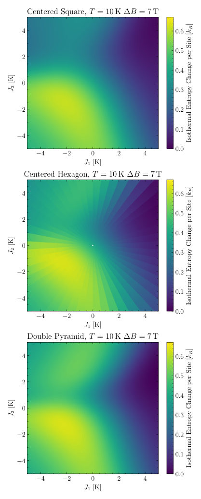
<figcaption class="paper-figure-caption"><b>Fig 3.</b> Figure 2. Isothermal entropy change per site when going from B = 7 T to B = 0 at a temperature of 10 K for all three topologies. Each site has spin 3/2.</figcaption>
</figure>
<figure class="paper-figure-card">
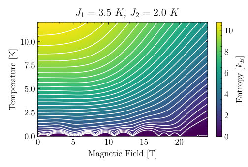
<figcaption class="paper-figure-caption"><b>Fig 4.</b> Figure 4. Isentropes of the double pyramid with spins 3/2 and J1 = 3.5 K and J2 = 2 K. The point (J1, J2) lies on the negative band of Fig. 3.</figcaption>
</figure>
<figure class="paper-figure-card">

<figcaption class="paper-figure-caption"><b>Fig 5.</b> Fig. 4. Level crossings induce “hilly” isentropes for low entropy (and hence low temperature). Around 2 K, this results in the isentropes being “pulled down” and hence the negative entropy change. Notice also that the ab- solute value of the change is small because in the range 2 K ≲T ≲5 K and B ≲10 T the isentropes are remark- ably flat. The yellow bands of Fig. 3 can also be explained by looking at isentropes. Fig. 5 shows the isentropes for the three yellow bands for the example of the double- pyramid. The isentropes crossing the neighborhood of B = 7 T, T = 2 K are close to those of a paramagnet, i.e. straight lines passing through the origin, which explains why they behave similarly to...</figcaption>
</figure>
</div>

<p><strong>Summary.</strong> This paper theoretically examines how centered molecular quantum spin systems behave magnetocalorically by modeling them with a Heisenberg exchange Hamiltonian. The authors calculate key metrics like entropy change and achievable cold temperatures across different coupling regimes. The findings suggest that while ferromagnetic interactions are generally favorable, the system's magnetic structure dictates its potential for use in advanced cooling technologies.</p>
<p><strong>Why it may be interesting.</strong> This work directly addresses quantum magnetism and thermal response in molecular materials, which is highly relevant to understanding energy storage and cooling mechanisms at the nanoscale, bridging condensed matter theory with potential applications in AMO physics.</p>
<details>
<summary>Detailed structure</summary>
<p><strong>Main problem.</strong> The study investigates the magnetocaloric properties of various centered molecular quantum spin systems.</p>
<p><strong>Main result.</strong> Ferromagnetic interactions are generally preferential for achieving large entropy changes, though sub-Kelvin cooling can be achieved under specific conditions by tuning exchange parameters and central spins.</p>
<p><strong>Method.</strong> Theoretical calculations using the canonical ensemble to determine thermodynamic quantities like isothermal entropy change ($\Delta S$) and adiabatic demagnetization temperature ($T_{cold}$).</p>
<p><strong>Model / system.</strong> The systems are centered magnetic molecules (square, hexagon, double pyramid) modeled by a Heisenberg exchange Hamiltonian involving two primary exchange parameters ($J_1$ and $J_2$). All sites are assumed to have spin 3/2.</p>
<p><strong>Key observables.</strong> Isothermal entropy change ($\Delta S$), adiabatic temperature change, and the final cold temperature ($T_{cold}$) after demagnetization from a field of 7 T.</p>
<p><strong>Important parameters / regimes.</strong> External magnetic field change ($\Delta B = 7 	ext{ T}$), temperatures studied (2 K to 10 K), and the ratio/sign of exchange parameters $J_1$ and $J_2$.</p>
<p><strong>Assumptions / limitations.</strong> The analysis relies on calculating eigenvalues for specific topologies; limitations include restricting the search for maximum $\Delta S$ to a certain temperature range.</p>
<p><strong>Figures summary.</strong> Figures illustrate isentropic curves, the dependence of $\Delta S_{max}$ on interaction parameters, and the resulting cold temperatures after demagnetization for different molecular geometries.</p>
<p><strong>Paper structure.</strong> The paper systematically analyzes the magnetocaloric response across three distinct molecular topologies by varying the exchange coupling constants ($J_1, J_2$) within the Hamiltonian framework. It compares results across various temperature regimes to identify optimal conditions for magnetic refrigeration.</p>
</details>
<details>
<summary>Abstract</summary>
<p>We investigate the magnetocaloric properties of a class of centered magnetic molecules that are very similar in their magnetic properties. In particular, we study the magnetocaloric response of these molecules in the space of two exchange parameters and as function of the spin quantum numbers. Major figures of merit such as adiabatic temperature change and isothermal entropy change as well as theoretically achievable low temperatures show that overall ferromagnetic interactions are preferential as long as this does not lead to dipolar ordering.</p>
</details>
<p><sub><a href="#top">↑ back to top</a></sub></p>

<p><a id="paper-2607.07326"></a></p>
<h3 id="magnetotransport-properties-of-iron-based-ladder-compounds-bafe2s3-and-bafe2se3-under-high-pressure"><a href="http://arxiv.org/abs/2607.07326v1">Magnetotransport Properties of Iron-Based Ladder Compounds BaFe2S3 and BaFe2Se3 under High Pressure</a></h3>
<p><strong>Authors:</strong> Takuya Aoyama, Kenya Ohgushi<br>
<strong>Type:</strong> both · <strong>Category:</strong> strongly correlated electrons · <strong>PDF:</strong> <a href="https://arxiv.org/pdf/2607.07326v1">https://arxiv.org/pdf/2607.07326v1</a><br>
<strong>Analysis basis:</strong> full PDF text, analyzed in chunks
<strong>Topic relevance:</strong> <code>Kondo &amp; dissipative impurity</code> <strong>1/5</strong> · <code>analog quantum simulation</code> <strong>1/5</strong> · <code>non-equilibrium dynamics</code> <strong>1/5</strong></p>
<div class="figure-strip-hint">↔ Scroll figures horizontally</div>
<div class="paper-figures-scroll">
<figure class="paper-figure-card">
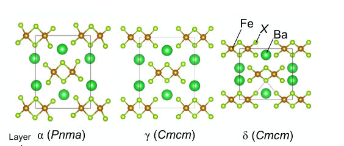
<figcaption class="paper-figure-caption"><b>Fig 1.</b> FIG. 1. (color online) Crystal structures of BaFe2X3 (X = S and Se) viewed from the leg direction. In the α struc- ture, the ladder is buckled layer by layer, resulting in the Pnma space group. The γ structure has the highest symme- try (Cmcm). In the δ structure, the layer direction is greatly compressed, without any symmetry breaking from the space group of Cmcm.</figcaption>
</figure>
<figure class="paper-figure-card">
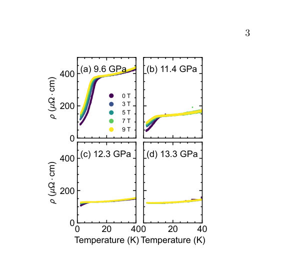
<figcaption class="paper-figure-caption"><b>Fig 2.</b> FIG. 3. (color online) Temperature dependence of BaFe2S3 electrical resistivity (ρ) under several constant magnetic fields. (a)-(d) Electrical resistivity ρ measured at (a) 9.6 GPa, (b) 11.4 GPa, (c) 12.3 GPa, and (d) 13.3 GPa. Each panel displays data obtained under static magnetic fields up to 9 T applied perpendicular to the layer.</figcaption>
</figure>
<figure class="paper-figure-card">

<figcaption class="paper-figure-caption"><b>Fig 3.</b> FIG. 2. (color online) (a) Temperature dependence of BaFe2S3 electrical resistivity (ρ) under high pressures (log- scale). (b) Metallic temperature dependence of BaFe2S3 elec- trical resistivity above 9.6 GPa (linear scale). Solid lines are fits with the power law, ρ = ρ0 + AT n.</figcaption>
</figure>
<figure class="paper-figure-card">
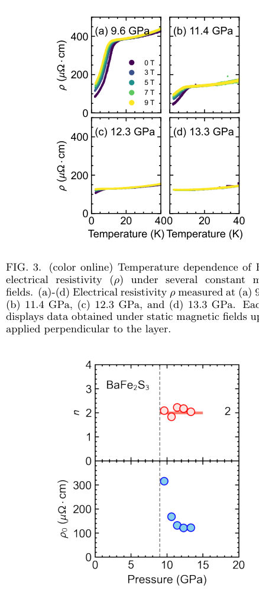
<figcaption class="paper-figure-caption"><b>Fig 4.</b> FIG. 4. (color online) Pressure dependence of n and ρ0, where n and ρ0 are the exponent of T for electrical resistivity and the residual resistivity in BaFe2S3. The vertical dotted line indicates the pressure of the insulator-metal transition.</figcaption>
</figure>
<figure class="paper-figure-card">
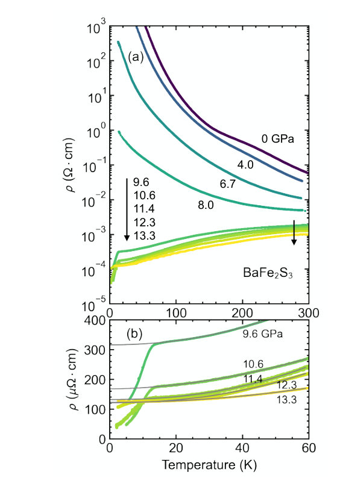
<figcaption class="paper-figure-caption"><b>Fig 5.</b> Figure 5 plots the magnetoresistance and the Hall re- sistivity in the metallic phase of BaFe2S3 at various pres- sures. The data were acquired in a transverse configura- tion with the current applied in the leg direction and the magnetic field applied along the layer direction (see inset of Fig.5(a)). Above 9.6 GPa, which shows the metal- lic temperature dependence in resistivity, the resistivity increased in proportion to the square of the applied mag- netic field, and its amplitude tended to increase at lower</figcaption>
</figure>
</div>

<p><strong>Summary.</strong> This work investigates how magnetotransport properties change in iron-based ladder compounds ($    ext{BaFe}_2 ext{X}_3$) when subjected to high pressure. By analyzing the temperature and field dependence of resistivity, the authors distinguish between Fermi-liquid behavior (in $   ext{BaFe}_2 ext{S}_3$) and non-Fermi-liquid behavior (in $  ext{BaFe}_2 ext{Se}_3$). The findings highlight how structural transitions can dramatically alter electronic transport near superconducting phases.</p>
<p><strong>Why it may be interesting.</strong> The comparison between Fermi-liquid ($T^2$) and non-Fermi-liquid ($T^{3/2}$) scaling in relation to magnetic fluctuations is a canonical problem in strongly correlated electron physics, highly relevant to understanding unconventional superconductivity mechanisms.</p>
<details>
<summary>Detailed structure</summary>
<p><strong>Main problem.</strong> The study investigates the magnetotransport properties of iron-based ladder compounds under high pressure, particularly focusing on their behavior near insulator-metal transitions.</p>
<p><strong>Main result.</strong> BaFe2S3 exhibits Fermi-liquid-like behavior ($T^2$ resistivity) with normal magnetoresistance, while BaFe2Se3 shows non-Fermi-liquid characteristics ($T^{3/2}$ resistivity) and negative magnetoresistance, suggesting different underlying electronic states.</p>
<p><strong>Method.</strong> The research combines electrical transport measurements (resistivity vs. T and B), magnetotransport analysis using the two-carrier model, and structural characterization via X-ray diffraction under high pressure.</p>
<p><strong>Model / system.</strong> The physical system is iron-based ladder compounds ($   ext{BaFe}_2 ext{X}_3$, where $  ext{X}= ext{S}$ or $    ext{Se}$). These materials are studied in the context of Mott insulating states and their evolution into metallic/superconducting phases under external pressure.</p>
<p><strong>Key observables.</strong> Electrical resistivity ($
ho$) temperature dependence ($
ho \propto T^n$), magnetoresistance (MR), Hall resistivity ($
ho_{yx}$), and structural phase transitions ($\gamma    o \delta$).</p>
<p><strong>Important parameters / regimes.</strong> High pressures (up to 15 GPa), low temperatures, and magnetic fields.</p>
<p><strong>Assumptions / limitations.</strong> The analysis relies on fitting resistivity data to power laws ($T^2$ vs $T^{3/2}$) to distinguish between Fermi-liquid and non-Fermi-liquid regimes; the two-carrier model is used for transport analysis.</p>
<p><strong>Figures summary.</strong> Figures illustrate crystal structures, temperature dependence of resistivity under pressure for $  ext{BaFe}_2 ext{S}_3$, and general trends showing how resistivity changes with pressure and magnetic field.</p>
<p><strong>Paper structure.</strong> The paper systematically compares the normal state transport properties of $   ext{BaFe}_2 ext{S}_3$ and $ ext{BaFe}_2 ext{Se}_3$. It analyzes temperature dependence to classify electronic behavior (FL vs NFL) and examines magnetotransport effects, linking these changes to pressure-induced structural transitions.</p>
</details>
<details>
<summary>Abstract</summary>
<p>The magnetotransport properties of the iron-based ladder compounds BaFe2S3 and BaFe2Se3 under various pressures were investigated. BaFe2S3 had a T^2 dependence in electrical resistivity and a normal magnetoresistance near an insulator-metal transition. Therefore, it had Fermi-liquid-like properties in the normal phase. However, BaFe2Se3 had a T^3/2 dependence in electrical resistivity and a negative magnetoresistance. This suggested that BaFe2Se3 had non-Fermi-liquid properties near the insulator-metal transition. For both materials, the Hall resistivities indicated a hole-dominant magnetic field dependence. During a pressure-induced insulator-metal transition, BaFe2Se3 had a rapid decrease in electrical resistivity above 15 GPa attributed to an isomorphic structural transition previously reported in X-ray diffraction experiments. This transition had a strong impact on the electronic properties.</p>
</details>
<p><sub><a href="#top">↑ back to top</a></sub></p>

<p><a id="paper-2607.07056"></a></p>
<h3 id="quantum-recurrence-plot-algorithm-based-on-quantum-principal-component-analysis"><a href="http://arxiv.org/abs/2607.07056v1">Quantum Recurrence Plot Algorithm Based on Quantum Principal Component Analysis</a></h3>
<p><strong>Authors:</strong> Hanhuai Zhu, Jingjing Huang, Zhi-Xi Wang, Shao-Ming Fei<br>
<strong>Type:</strong> theory · <strong>Category:</strong> quantum information and computing · <strong>PDF:</strong> <a href="https://arxiv.org/pdf/2607.07056v1">https://arxiv.org/pdf/2607.07056v1</a><br>
<strong>Analysis basis:</strong> full PDF text, analyzed in chunks
<strong>Topic relevance:</strong> <code>entanglement &amp; information structure</code> <strong>1/5</strong> · <code>methods for driven-dissipative</code> <strong>1/5</strong> · <code>non-equilibrium dynamics</code> <strong>1/5</strong></p>
<div class="figure-strip-hint">↔ Scroll figures horizontally</div>
<div class="paper-figures-scroll">
<figure class="paper-figure-card">
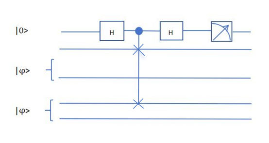
<figcaption class="paper-figure-caption"><b>Fig 1.</b> Figure 2 Quantum circuit diagram for computing the square of density operator using ST operator.</figcaption>
</figure>
<figure class="paper-figure-card">
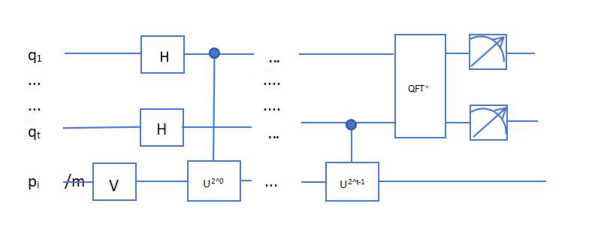
<figcaption class="paper-figure-caption"><b>Fig 2.</b> Figure 3 Quantum circuit diagram for computing eigenvalues of a density operator using quantum phase estimation.</figcaption>
</figure>
<figure class="paper-figure-card">
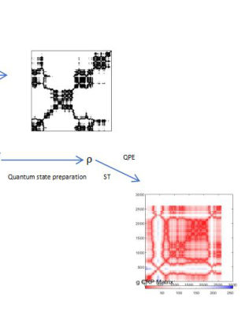
<figcaption class="paper-figure-caption"><b>Fig 3.</b> Figure 4 Algorithm flow of classical recurrence plots and quantum recurrence plots.</figcaption>
</figure>
<figure class="paper-figure-card">
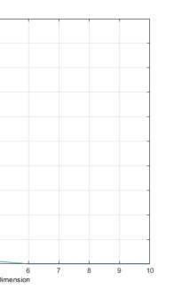
<figcaption class="paper-figure-caption"><b>Fig 4.</b> Figure 5 Embedding dimension analysis.</figcaption>
</figure>
<figure class="paper-figure-card">
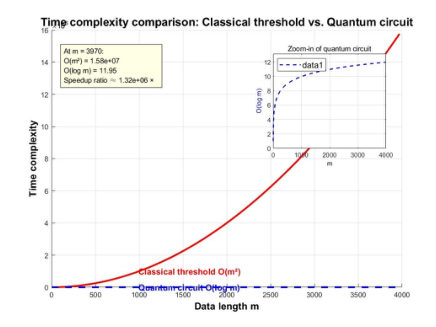
<figcaption class="paper-figure-caption"><b>Fig 5.</b> Figure 8 Time complexity comparison: Classical recurrence plot (O(m2)) vs. Quantum recurrence plot (O(logm))</figcaption>
</figure>
</div>

<p><strong>Summary.</strong> This work introduces a Quantum Recurrence Plot (QRP) algorithm that enhances the analysis of complex system periodicity and chaos. By replacing classical distance thresholding with quantum circuit calculations based on density matrices, QRP achieves superior diagnostic quality and theoretical computational efficiency compared to traditional methods. It shows how quantum computation can accelerate nonlinear time series analysis.</p>
<p><strong>Why it may be interesting.</strong> It demonstrates a concrete application of quantum algorithms (QPE, QPCA) to analyze non-linear dynamics in classical physics problems, showing potential speedups over established numerical methods.</p>
<details>
<summary>Detailed structure</summary>
<p><strong>Main problem.</strong> The paper aims to improve classical Recurrence Plot (RP) analysis, which characterizes complex system dynamics, by developing a Quantum Recurrence Plot (QRP) algorithm.</p>
<p><strong>Main result.</strong> The QRP significantly outperforms classical RP by achieving better visualization (colored heatmaps), higher recurrence point density, and superior quantitative metrics like Determinism due to quantum circuit implementation.</p>
<p><strong>Method.</strong> It integrates Quantum Principal Component Analysis (QPCA) with the Recurrence Plot framework, using quantum circuits (like Swap Test or QPE) to calculate necessary state correlations via density operators.</p>
<p><strong>Model / system.</strong> The analysis is applied to complex dynamical systems represented by time series data reconstructed in a phase space using an embedding dimension. The core mathematical tool involves analyzing the covariance matrix through its associated density operator.</p>
<p><strong>Key observables.</strong> Recurrence Rate (RR), Determinism (DET), Average Diagonal Length (L), Entropy (ENTR), and the structure of the recurrence plot itself.</p>
<p><strong>Important parameters / regimes.</strong> Embedding dimension ($m$), time delay ($    au$), and the quantum circuit complexity scaling ($   ext{O}(\log m)$ vs $    ext{O}(m^2)$).</p>
<p><strong>Assumptions / limitations.</strong> The speedup relies on ideal quantum hardware with sufficient coherence times; preprocessing steps like determining embedding dimension remain classical.</p>
<p><strong>Figures summary.</strong> Figures compare structural patterns (mutation vs. periodic) and quantitative metrics (RQA) between the classical RP and the proposed QRP, alongside complexity comparisons.</p>
<p><strong>Paper structure.</strong> The paper introduces the limitations of classical RPs, proposes using quantum methods via density operators derived from covariance matrices, details the implementation using quantum circuits for efficiency gains, and validates the improved diagnostics against real-world time series data.</p>
</details>
<details>
<summary>Abstract</summary>
<p>Recurrence Plot (RP) is a method employed to analyze the periodicity, chaoticity, and nonlinear characteristics of complex systems. Quantum Principal Component Analysis (QPCA), on the other hand, achieves dimensionality reduction of sample data using density matrices based on quantum circuits. We improve the distance threshold function of the recurrence plot algorithm using a density operator conceptually equivalent to the covariance matrix, integrate it with quantum circuits, and thereby develop a Quantum Recurrence Plot (QRP) algorithm. This algorithm achieves ultra-high efficiency in parallel computing, reduces computational costs, and simultaneously upgrades the traditional grayscale recurrence plot to colored heatmaps, enabling a better revelation of the system's dynamical characteristics.</p>
</details>
<p><sub><a href="#top">↑ back to top</a></sub></p>

<p><a id="paper-2607.07630"></a></p>
<h3 id="raman-spectroscopic-signature-of-kitaev-magnetism-and-complex-spin-lattice-coupling-in-s-12-antiferromagnet-srlaconbomath767math-double-perovskite"><a href="http://arxiv.org/abs/2607.07630v1">Raman spectroscopic signature of Kitaev magnetism and complex spin-lattice coupling in S = 1/2 antiferromagnet SrLaCoNbO$_6$ double perovskite</a></h3>
<p><strong>Authors:</strong> Ajay Kumar, Clemens Ulrich, Rajendra S. Dhaka<br>
<strong>Type:</strong> experiment · <strong>Category:</strong> strongly correlated electrons · <strong>PDF:</strong> <a href="https://arxiv.org/pdf/2607.07630v1">https://arxiv.org/pdf/2607.07630v1</a><br>
<strong>Analysis basis:</strong> full PDF text, analyzed in chunks
<strong>Topic relevance:</strong> <code>analog quantum simulation</code> <strong>1/5</strong> · <code>exotic spin models in light-matter</code> <strong>1/5</strong> · <code>spintronics-quantum-optics interface</code> <strong>1/5</strong></p>
<div class="figure-strip-hint">↔ Scroll figures horizontally</div>
<div class="paper-figures-scroll">
<figure class="paper-figure-card">
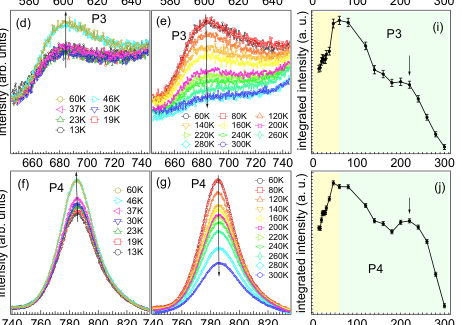
<figcaption class="paper-figure-caption"><b>Fig 1.</b> FIG. 1. (a) The Raman spectra of SrLaCoNbO6 measured between 13 and 300 K using the 514 nm line from an Ar-ion laser. Each spectrum is vertically offset for clarity. The solid black curves represent fits to the spectra in the 550–850 cm−1</figcaption>
</figure>
<figure class="paper-figure-card">
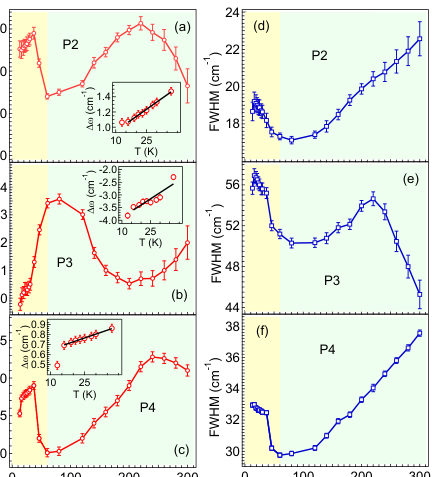
<figcaption class="paper-figure-caption"><b>Fig 2.</b> FIG. 2. Temperature dependence of the (a–c) phonon fre- quencies and (d–f) linewidths of modes P2–P4. The insets in (a–c) display the deviation of the mode frequency (∆ω) below ∼60 K. The solid black lines are guides to the eye.</figcaption>
</figure>
<figure class="paper-figure-card">
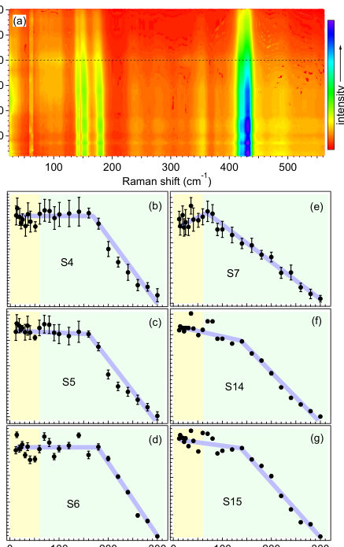
<figcaption class="paper-figure-caption"><b>Fig 3.</b> FIG. 3. (a) Contour plot of the Raman spectra of SrLaCoNbO6 recorded using the 633 nm laser line as the ex- citation source over the temperature range 12–300 K. The horizontal dashed line indicates a change in the intensity of the low-energy modes around 200 K. (b–g) Temperature de- pendence of the integrated intensities of the prominent modes. The blue lines are guides to the eye.</figcaption>
</figure>
<figure class="paper-figure-card">
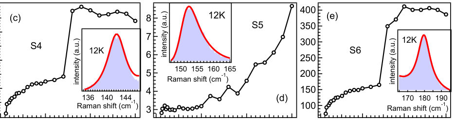
<figcaption class="paper-figure-caption"><b>Fig 4.</b> FIG. 4. Fits to the S4-S6 modes of the Raman spectrum at 12 K using the sum of (a) Voigt (b) Fano line shapes. (c–e) Temperature dependence of the Fano asymmetry parameter, q for the S4–S6 modes, respectively. The insets show individual Fano fits to the experimental data at 12 K.</figcaption>
</figure>
<figure class="paper-figure-card">
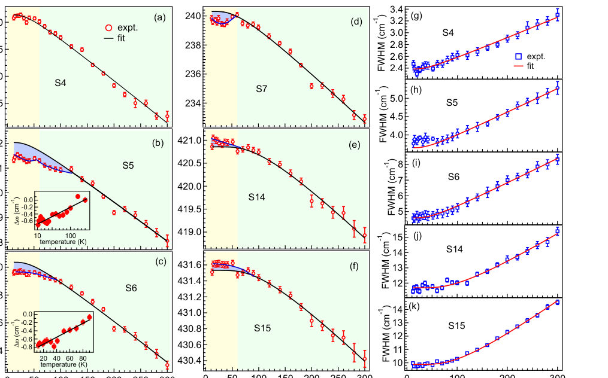
<figcaption class="paper-figure-caption"><b>Fig 5.</b> FIG. 5. (a–f) Temperature dependence of the phonon frequencies of modes S4–S7, S14, and S15, respectively. The solid black curves represent fits to the experimental data using the three-phonon anharmonic decay model [Eq. (2)], and the shaded blue regions highlight deviations from this model. The insets in (b) and (c) show the deviation from the anharmonic model (∆ω) in the low-temperature range; the black lines serve as guides to the eye. (g–k) Temperature dependence of the linewidth (FWHM) of these modes. The solid red curves represent fits using the anharmonic phonon decay model.</figcaption>
</figure>
</div>

<p><strong>Summary.</strong> This work uses Raman spectroscopy and EXAFS to probe spin-lattice coupling in the antiferromagnet $    ext{SrLaCoNbO}_6$. The key finding is that lattice vibrations show strong anomalies at temperatures well above the magnetic transition, suggesting that fluctuating magnetic moments interact intimately with the crystal structure. This provides experimental support for proximate Kitaev-like correlations in $3d$ transition metal oxides.</p>
<p><strong>Why it may be interesting.</strong> The observation of lattice dynamics persisting and exhibiting strong anomalies far above the magnetic ordering temperature provides direct experimental evidence for fluctuating magnetic correlations influencing crystal structure, a key topic in quantum magnetism.</p>
<details>
<summary>Detailed structure</summary>
<p><strong>Main problem.</strong> The study investigates the Raman spectroscopic signature of Kitaev magnetism and complex spin-lattice coupling mechanisms in an antiferromagnetic double perovskite.</p>
<p><strong>Main result.</strong> Pronounced anomalies in lattice dynamics (phonon frequency, linewidth) are observed significantly above the long-range magnetic ordering temperature, suggesting strong coupling between fluctuating spins and the crystal lattice.</p>
<p><strong>Method.</strong> The research employs a combination of temperature-dependent Raman spectroscopy and Co K-edge Extended X-ray Absorption Fine Structure (EXAFS).</p>
<p><strong>Model / system.</strong> The system is $ ext{SrLaCoNbO}_6$, a B-site–ordered double perovskite hosting $S=1/2$ insulating antiferromagnet $  ext{Co}^{2+}$ ions. The analysis focuses on pseudo-spin-$   ilde{S}=1/2$ behavior relevant to Kitaev physics.</p>
<p><strong>Key observables.</strong> Phonon frequency, linewidth, spectral weight anomalies; Fano asymmetry parameter ($q$); changes in bond distances and Debye-Waller factors (from EXAFS).</p>
<p><strong>Important parameters / regimes.</strong> Anomalies are noted around 60 K and 160–180 K, both significantly above the long-range Néel temperature ($T_{
m N} \approx 15$ K).</p>
<p><strong>Assumptions / limitations.</strong> The authors caution that a purely structural contribution cannot be definitively excluded when interpreting lattice renormalizations.</p>
<p><strong>Figures summary.</strong> Figures illustrate the temperature dependence of various Raman modes' intensities and spectral parameters, showing distinct anomalies at multiple temperatures. EXAFS data confirm correlated changes in local structure near 60 K and 160 K.</p>
<p><strong>Paper structure.</strong> The paper analyzes spectroscopic signatures across different temperature regimes: initial observations around 60 K show spin-lattice coupling; subsequent analysis of low-energy modes reveals Fano line shapes suggesting coupling to magnetic continua; finally, EXAFS confirms local structural distortions correlating with these thermal anomalies.</p>
</details>
<details>
<summary>Abstract</summary>
<p>We report a detailed analysis of temperature-dependent Raman spectroscopy and Co $K$-edge extended x-ray absorption fine structure (EXAFS) for a pseudospin-$\tilde{S}=1/2$ insulating antiferromagnet SrLaCoNbO$_6$, a B-site--ordered double perovskite hosting Co$^{2+}$ ($3d^7$) ions on an {\it f.c.c.} sublattice. Notably, pronounced anomalies in the phonon frequency, linewidth and spectral weight are observed around 60~K, well above the long-range antiferromagnetic transition at $T_{\rm N} \approx 15$~K. These renormalizations indicate a significant coupling between lattice and spin degrees of freedom, although a purely structural contribution cannot be excluded. Additional modifications of both high- and low-energy Raman modes are detected near 160-180 K, including changes in linewidth and intensity, variations of the Fano asymmetry parameter, and the emergence of an additional low-energy feature. The asymmetric Fano line shape of selected low-energy modes, together with a broad low-energy continuum and quasielastic response, suggests coupling between discrete phonons and fluctuating magnetic excitations. Moreover, the EXAFS analysis reveals correlated changes in bond distances and Debye-Waller factors around the Co ions near 60~K and 160~K, evidencing subtle local structural distortions and possible magnetostrictive effects. The persistence of anomalous lattice dynamics far above $T_{\rm N}$, combined with the excitation-energy--independent continuum, is consistent with fluctuating bond-directional interactions and proximate Kitaev-like correlations.</p>
</details>
<p><sub><a href="#top">↑ back to top</a></sub></p>

<p><a id="paper-2607.06995"></a></p>
<h3 id="surface-reconstruction-driven-insulating-behavior-in-metallic-charge-density-wave-1t-tasemath779math"><a href="http://arxiv.org/abs/2607.06995v1">Surface-Reconstruction-Driven Insulating Behavior in Metallic Charge-Density-Wave 1T-TaSe$_{2}$</a></h3>
<p><strong>Authors:</strong> Sung-Hoon Lee, Doohee Cho<br>
<strong>Type:</strong> theory · <strong>Category:</strong> strongly correlated electrons · <strong>PDF:</strong> <a href="https://arxiv.org/pdf/2607.06995v1">https://arxiv.org/pdf/2607.06995v1</a><br>
<strong>Analysis basis:</strong> full PDF text, analyzed in chunks
<strong>Topic relevance:</strong> <code>Frenkel-Kontorova</code> <strong>1/5</strong> · <code>Keldysh / 2PI / non-Gaussian methods</code> <strong>1/5</strong> · <code>analog quantum simulation</code> <strong>1/5</strong></p>
<div class="figure-strip-hint">↔ Scroll figures horizontally</div>
<div class="paper-figures-scroll">
<figure class="paper-figure-card">
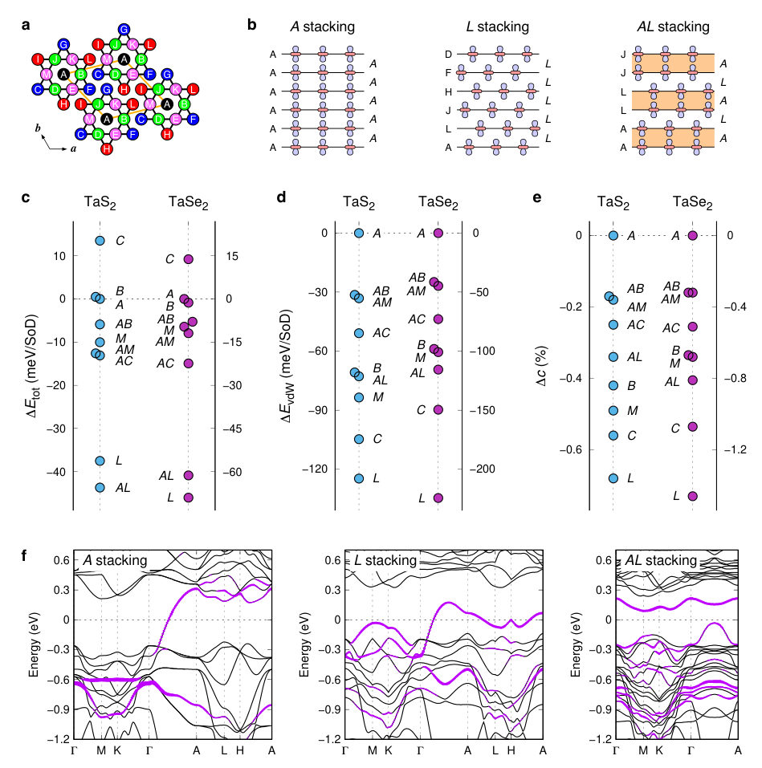
<figcaption class="paper-figure-caption"><b>Fig 1.</b> FIG. 1. CDW stacking order in bulk 1T-TaSe2. (a) Labeling convention for Ta atoms within a Star-</figcaption>
</figure>
<figure class="paper-figure-card">
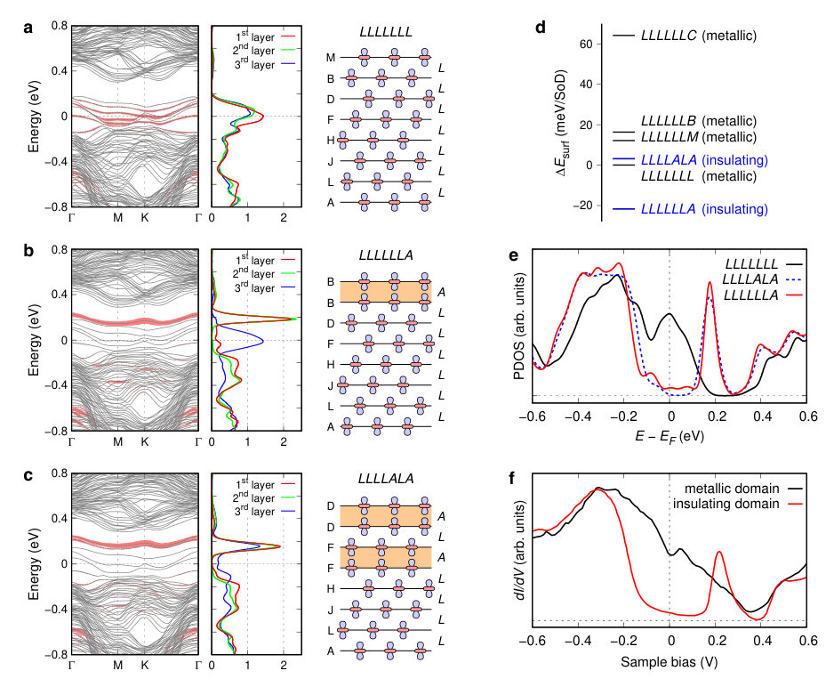
<figcaption class="paper-figure-caption"><b>Fig 2.</b> FIG. 2. Surface stacking–dependent electronic structures of 1T-TaSe2. (a–c) Left: Electronic band</figcaption>
</figure>
<figure class="paper-figure-card">
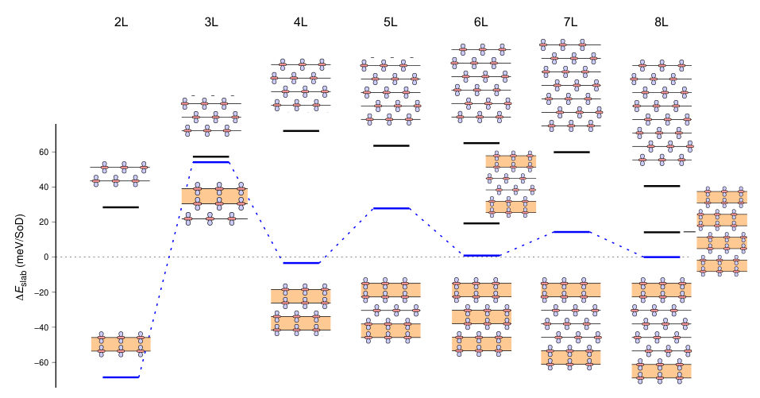
<figcaption class="paper-figure-caption"><b>Fig 3.</b> FIG. 3. Thickness-dependent energetics of 1T-TaSe2 slabs. Relative slab energies (∆Eslab, in</figcaption>
</figure>
<figure class="paper-figure-card">
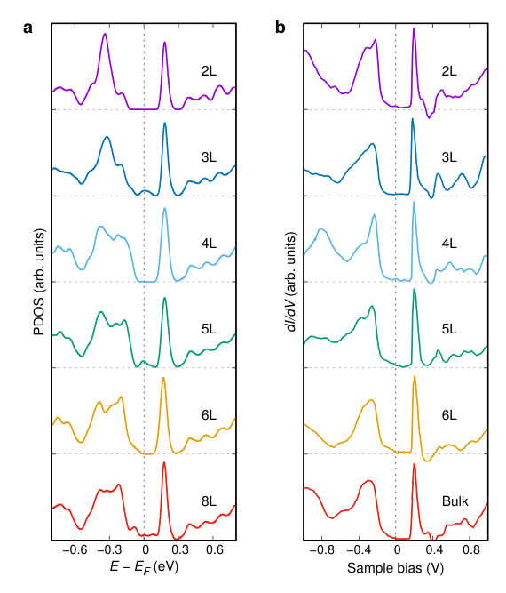
<figcaption class="paper-figure-caption"><b>Fig 4.</b> FIG. 4. Thickness-dependent surface electronic states of 1T-TaSe2 slabs. (a) Calculated PDOS of Ta dz2</figcaption>
</figure>
</div>

<p><strong>Summary.</strong> This theoretical study investigates the electronic structure of 1T-TaSe2, resolving whether its surface gap is due to electron correlations or structural effects. Using DFT calculations, the authors prove that the surface reconstructs into a bilayer structure which opens a band insulator gap via orbital hybridization. This finding establishes CDW reconstruction as the governing mechanism, rather than Mott physics.</p>
<p><strong>Why it may be interesting.</strong> While focused on solid-state CDW physics, the clear distinction between correlation-driven (Mott) vs. structural/band-driven gaps provides a general framework for analyzing insulating states in strongly correlated materials relevant to quantum simulation platforms.</p>
<details>
<summary>Detailed structure</summary>
<p><strong>Main problem.</strong> The study resolves the long-standing debate regarding the origin of an insulating surface gap observed on the metallic CDW material 1T-TaSe2.</p>
<p><strong>Main result.</strong> The insulating state is not due to Mott physics, but rather arises from a structural reconstruction to an A-interface bilayer that opens a band insulator gap via interlayer hybridization.</p>
<p><strong>Method.</strong> Density Functional Theory (DFT) calculations were employed to model the energetics and electronic structure of finite-thickness slabs.</p>
<p><strong>Model / system.</strong> The system is the layered transition metal dichalcogenide 1T-TaSe2, modeled as varying slab thicknesses (2L to 8L) with different surface CDW stacking orders.</p>
<p><strong>Key observables.</strong> Projected Density of States (PDOS), total energy differences ($\Delta E_{	ext{slab}}$), and comparison with Scanning Tunneling Spectroscopy (STS) spectra.</p>
<p><strong>Important parameters / regimes.</strong> The gap magnitude ($\sim 0.4 	ext{ eV}$), the correlation parameter $U$ (where $U=0$ is favored for bulk/surface analysis), and slab thickness ($2	ext{L}$ to $8	ext{L}$).</p>
<p><strong>Assumptions / limitations.</strong> The surface reconstruction is assumed to be driven by minimizing total energy, leading to an A-interface bilayer ground state.</p>
<p><strong>Figures summary.</strong> Figures illustrate the energetic preference for the reconstructed A-interface bilayer over uniform L stacking across all thicknesses, and show PDOS calculations matching STS measurements for both insulating and metallic domains.</p>
<p><strong>Paper structure.</strong> The paper systematically compares bulk (L stacking) vs. surface (A-interface reconstruction) electronic structures using DFT. It establishes the energetic stability of the reconstructed surface state and uses PDOS/STS comparisons to definitively rule out Mott physics in favor of a band insulator mechanism.</p>
</details>
<details>
<summary>Abstract</summary>
<p>Bulk 1T-TaSe$_2$ is metallic, yet its surface consistently exhibits an insulating gap -- a dichotomy long attributed to a surface Mott insulator driven by enhanced electron correlations. Here, using density functional theory calculations, we show that this insulating surface instead originates from a charge-density-wave (CDW) stacking reconstruction. Whereas the bulk stabilizes a single-layer CDW stacking that supports metallic transport, the surface energetically favors a bilayer stacking, in which interlayer hybridization of Ta $5d_{z^2}$ orbitals opens a $\sim$0.4 eV gap -- a band insulator requiring no on-site Coulomb repulsion. This reconstruction is the thermodynamic ground state for slab thicknesses from two to eight layers, and the calculated surface density of states quantitatively reproduces scanning tunneling spectra for both insulating and metallic domains. Our results establish CDW surface reconstruction, rather than Mott physics, as the mechanism governing the surface electronic structure of 1T-TaSe$_2$ and provide a unified explanation for the experimentally observed coexistence of metallic and insulating domains.</p>
</details>
<p><sub><a href="#top">↑ back to top</a></sub></p>

<p><a id="paper-2607.07044"></a></p>
<h3 id="absolute-frequency-measurement-of-the-math789mathlumath790math-standard-against-the-nrc-fcs2-fountain-with-math791math-uncertainty"><a href="http://arxiv.org/abs/2607.07044v1">Absolute frequency measurement of the $^{176}$Lu$^+\,(^{3}\mathrm{D}_1)$ standard against the NRC-FCs2 fountain with $2.6\times10^{-16}$ uncertainty</a></h3>
<p><strong>Authors:</strong> K. J. Arnold, Bin Jian, Zhao Zhang, Qi Zhao, Qin Qichen, N. Jayjong, M. D. K. Lee, Scott Beattie, M. D. Barrett<br>
<strong>Type:</strong> experiment · <strong>Category:</strong> other · <strong>PDF:</strong> <a href="https://arxiv.org/pdf/2607.07044v1">https://arxiv.org/pdf/2607.07044v1</a><br>
<strong>Analysis basis:</strong> full PDF text, analyzed in chunks
<strong>Topic relevance:</strong> <code>QC/QI experiment</code> <strong>1/5</strong> · <code>quantum measurements</code> <strong>1/5</strong></p>
<div class="figure-strip-hint">↔ Scroll figures horizontally</div>
<div class="paper-figures-scroll">
<figure class="paper-figure-card">
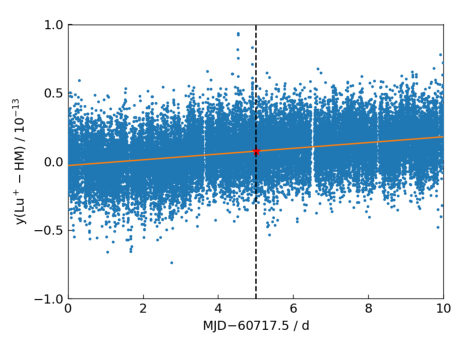
<figcaption class="paper-figure-caption"><b>Fig 1.</b> Figure 1. The fractional frequency offset between the Lu+</figcaption>
</figure>
<figure class="paper-figure-card">
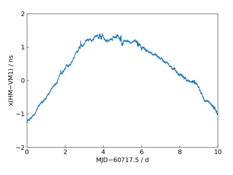
<figcaption class="paper-figure-caption"><b>Fig 2.</b> Figure 3. Phase difference of flywheel oscillator masers between the two labs. A constant linear fit (frequency offset) has been removed.</figcaption>
</figure>
<figure class="paper-figure-card">
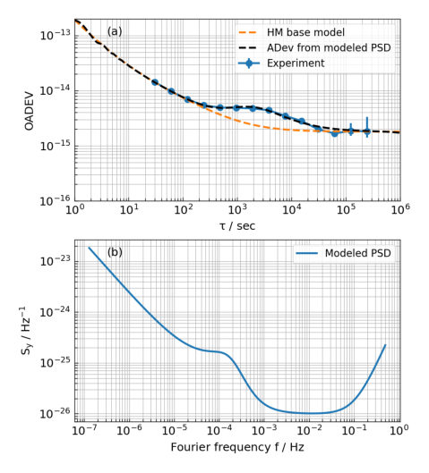
<figcaption class="paper-figure-caption"><b>Fig 3.</b> Figure 2. Noise model of the NUS HM as a flywheel oscillator for the Lu+ ion clock. (a) Allan deviation of the NUS HM showing the de-drifted frequency data (blue circles), base maser model (dashed orange line), and a modified noise model (dashed black line). (b) The single-sided PSD for the HM including a Lorentzian contribution accounting for the plateau in the Allan deviation.</figcaption>
</figure>
<figure class="paper-figure-card">
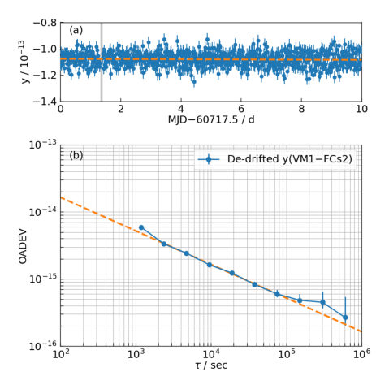
<figcaption class="paper-figure-caption"><b>Fig 4.</b> Figure 4. Frequency measurement of VM1 against NRC- FCs2. (a) Frequency offset between VM1 and NRC-FCs2, y(VM1 −FCs2). The systematic shifts of NRC-FCs2 have been corrected. The dashed line is a weighted linear fit to the data. The vertical gray line denotes the measurement downtime of 1.5 h due to scheduled maintenance. (b) Allan deviation of NRC- FCs2 as calculated from the data shown in (a), de-drifted. The first data point starts with τ0 of 1181 s as the duration of the high and low atomic densities for the fountain to extract the collisional cancellation frequency. The dashed line shows the modeled fountain instability of 1.65 × 10−13/√τ.</figcaption>
</figure>
</div>

<p><strong>Summary.</strong> The research reports an improved measurement of the $^{176}	ext{Lu}^+$ ion clock frequency by linking it to the NRC-FCs2 caesium fountain standard via GPS timing signals. The authors achieved an unprecedented fractional uncertainty of $2.6 	imes 10^{-16}$, confirming its high accuracy and reducing previous uncertainties significantly.</p>
<p><strong>Why it may be interesting.</strong> This work represents state-of-the-art optical atomic clock metrology, pushing the limits of timekeeping accuracy by comparing two different types of primary standards (ion vs. fountain) over a global link.</p>
<details>
<summary>Detailed structure</summary>
<p><strong>Main problem.</strong> To perform an improved absolute frequency measurement of the highly precise $^{176}	ext{Lu}^+ (3	ext{D}_1)$ optical clock standard by linking it to the established NRC-FCs2 caesium fountain primary frequency standard.</p>
<p><strong>Main result.</strong> The authors determined the absolute frequency of the Lu$^+$ standard to be $353,638,794,073,800.33(9)	ext{ Hz}$, achieving a fractional uncertainty of $2.6 	imes 10^{-16}$. This significantly improves previous measurements by a factor of 3.6.</p>
<p><strong>Method.</strong> The measurement utilized a remote link established via an ambiguity-resolved precise point positioning (PPP-AR) connection over GPS, comparing the ion clock to the caesium fountain standard over a 10-day period.</p>
<p><strong>Model / system.</strong> The experiment involves two primary atomic clocks: a single $^{176}	ext{Lu}^+$ ion trapped in a Paul trap and the NRC-FCs2 caesium fountain. The comparison is mediated by GPS timing links connecting local hydrogen masers to both standards.</p>
<p><strong>Key observables.</strong> Absolute frequency of $^{176}	ext{Lu}^+ (3	ext{D}_1)$, frequency difference $y(	ext{Lu}^+ - 	ext{FCs2})$, and the overall fractional uncertainty ($\sigma/f$).</p>
<p><strong>Important parameters / regimes.</strong> Fractional uncertainty limit of $2.6 	imes 10^{-16}$; comparison against the CIPM recommended value; systematic uncertainties from gravitational redshift and clock stability.</p>
<p><strong>Assumptions / limitations.</strong> The final measurement is limited by the instability of the NRC-FCs2 standard, which dominates the total systematic uncertainty budget.</p>
<p><strong>Figures summary.</strong> Figures illustrate frequency offsets between various local oscillators (e.g., Lu$^+$ vs NUS HM) and noise models (Allan deviation), while tables detail the systematic uncertainty budget for the FCs2 standard.</p>
<p><strong>Paper structure.</strong> The paper details the experimental setup, including the ion clock interrogation technique (Hyper-Ramsey spectroscopy) and the link establishment via GPS PPP-AR. It then presents a detailed analysis of systematic uncertainties from both clocks before reporting the final frequency comparison and absolute value.</p>
</details>
<details>
<summary>Abstract</summary>
<p>We report an improved absolute frequency measurement of the $^{176}$Lu$^+\,(^{3}\mathrm{D}_1)$ optical frequency standard, evaluated via a remote link to the NRC-FCs2 caesium fountain primary frequency standard. Operating a single ion clock with 94.2% uptime over 10 days, and using an ambiguity-resolved precise point positioning (PPP-AR) link over the Global Positioning System (GPS), we determine an absolute frequency of $353\,638\,794\,073\,800.33(9)\,$Hz at a fractional uncertainty of $2.6 \times 10^{-16}$. This agrees with our previous result, which underpins the CIPM recommended frequency value, and reduces the uncertainty by a factor of 3.6.</p>
</details>
<p><sub><a href="#top">↑ back to top</a></sub></p>

<p><a id="paper-2607.07572"></a></p>
<h3 id="analysis-of-the-sample-complexity-for-pac-learning-functions-defined-over-quantum-states"><a href="http://arxiv.org/abs/2607.07572v1">Analysis of the sample complexity for PAC-learning functions defined over quantum states</a></h3>
<p><strong>Authors:</strong> Jordi Pérez-Guijarro<br>
<strong>Type:</strong> theory · <strong>Category:</strong> quantum information and computing · <strong>PDF:</strong> <a href="https://arxiv.org/pdf/2607.07572v1">https://arxiv.org/pdf/2607.07572v1</a><br>
<strong>Analysis basis:</strong> full PDF text, analyzed in chunks
<strong>Topic relevance:</strong> <code>Keldysh / 2PI / non-Gaussian methods</code> <strong>1/5</strong> · <code>entanglement &amp; information structure</code> <strong>1/5</strong></p>
<div class="figure-strip-hint">↔ Scroll figures horizontally</div>
<div class="paper-figures-scroll">
<figure class="paper-figure-card">
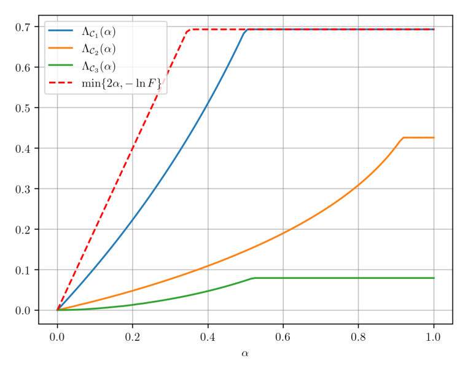
<figcaption class="paper-figure-caption"><b>Fig 1.</b> Figure 1: Plot of the function ΛC for the concept classes C1 = 2{|0⟩,|+⟩}, C2 = 2{|0⟩,|+⟩,|+y⟩}, and C3 = 2{|0⟩,|1⟩,|+⟩,|+y⟩}, along with the upper bound min{−ln F, 2α}. The code used to generate this figure is available at [22].</figcaption>
</figure>
</div>

<p><strong>Summary.</strong> This paper develops a theory to determine how many quantum examples are needed to reliably learn a function defined over quantum states. It proves that classical measures like VC-dimension fail in this setting, establishing new bounds dependent on state overlaps and linear independence. This advances the theoretical understanding of quantum machine learning complexity.</p>
<p><strong>Why it may be interesting.</strong> This work provides fundamental theoretical tools for quantifying learnability when the input data is inherently quantum mechanical, which is crucial for developing robust quantum machine learning protocols.</p>
<details>
<summary>Detailed structure</summary>
<p><strong>Main problem.</strong> The paper analyzes the sample complexity required for PAC-learning functions defined over quantum states, aiming to characterize this complexity beyond classical measures.</p>
<p><strong>Main result.</strong> It demonstrates that the VC-dimension is insufficient to characterize the quantum sample complexity; instead, bounds involve parameters related to state overlaps and linear independence of the quantum states.</p>
<p><strong>Method.</strong> The analysis involves deriving rigorous lower and upper bounds on the required number of samples using concepts like the quantum Chernoff distance and relating the problem to classical learning theory via auxiliary concepts.</p>
<p><strong>Model / system.</strong> The model considers concept classes $C$ whose functions act on quantum states $|\psi
angle$ within a Hilbert space $\mathcal{H}$. Learning occurs from examples provided as pairs $(|\phi
angle, c(|\phi
angle))$.</p>
<p><strong>Key observables.</strong> Sample complexity ($   ext{t}(\epsilon, \delta)$), VC-dimension ($d$), and the minimum eigenvalue of the state overlap matrix ($\lambda_{\min}(G)$).</p>
<p><strong>Important parameters / regimes.</strong> The fidelity/overlap parameter $F = \sup |\langle\psi|\psi'
angle|^2$, and the error tolerance $\epsilon$ and confidence $\delta$.</p>
<p><strong>Assumptions / limitations.</strong> A key result (Theorem 2) assumes that the quantum states $\{|\psi_i
angle\}$ are linearly independent.</p>
<p><strong>Figures summary.</strong> Figure 1 illustrates how a complexity measure $\Lambda_C(\alpha)$ is bounded by constants related to state overlaps, showing its relationship to classical bounds.</p>
<p><strong>Paper structure.</strong> The paper progresses from establishing the inadequacy of VC-dimension in the quantum setting, deriving specific lower and upper bounds using concepts like opposite pairs, and finally presenting a general bound for linearly independent states that resembles classical PAC-learning results.</p>
</details>
<details>
<summary>Abstract</summary>
<p>A fundamental question in PAC learning is determining the number of labeled examples required to learn a concept class to a desired accuracy and confidence. In classical learning theory, this quantity is characterized by the VC-dimension, while several quantum generalizations have established analogous results when examples are provided in quantum superposition. In this work, we study a distinct quantum PAC-learning model in which concepts are functions acting on quantum states. We demonstrate that the VC-dimension, although still relevant, fails to fully capture the sample complexity of this model. To further characterize this setting, we develop a new lower bound on the required number of samples and establish an upper bound when the states in the domain are linearly independent. Remarkably, this upper bound has a form similar to the classical PAC-learning bound. We further examine a setting in which the learner receives more informative data and show that the limitations of the VC-dimension persist in this extended model.</p>
</details>
<p><sub><a href="#top">↑ back to top</a></sub></p>

<p><a id="paper-2607.07125"></a></p>
<h3 id="density-effects-in-precision-laser-spectroscopy-of-exotic-helium-atoms"><a href="http://arxiv.org/abs/2607.07125v1">Density effects in precision laser spectroscopy of exotic helium atoms</a></h3>
<p><strong>Authors:</strong> Hubert J. Jóźwiak, Dimitar Bakalov, Michał Przybytek, Michail Stoilov, Piotr Wcisło<br>
<strong>Type:</strong> theory · <strong>Category:</strong> other · <strong>PDF:</strong> <a href="https://arxiv.org/pdf/2607.07125v1">https://arxiv.org/pdf/2607.07125v1</a><br>
<strong>Analysis basis:</strong> full PDF text, analyzed in chunks
<strong>Topic relevance:</strong> <code>Keldysh / 2PI / non-Gaussian methods</code> <strong>1/5</strong> · <code>methods for driven-dissipative</code> <strong>1/5</strong></p>
<div class="figure-strip-hint">↔ Scroll figures horizontally</div>
<div class="paper-figures-scroll">
<figure class="paper-figure-card">
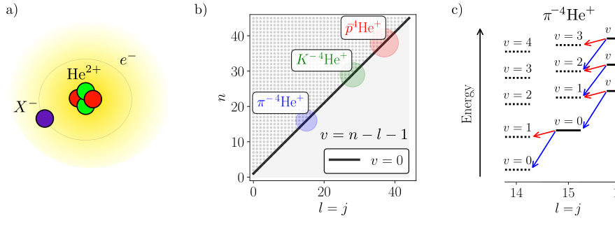
<figcaption class="paper-figure-caption"><b>Fig 1.</b> FIG. 1: Physical structure, states, and transitions in exotic helium atoms. (a) Schematic representation of an exotic helium atom. A heavy, negatively charged particle X−(X−= π−, K−, ¯p) is captured into a highly excited, near-circular orbit around the He2+ nucleus, while the remaining electron (gold cloud) occupies the 1s electronic orbital. (b) Overview of the state space in exotic atoms illustrating the exact correspondence between the atomic principal and orbital quantum numbers (n, l) and the molecular vibrational and rotational quantum numbers (v, j). Each grey dot represents a single (n, l) [(v, j)] state. States sharing vibrational quantum number are aligned along the diagonal, with...</figcaption>
</figure>
<figure class="paper-figure-card">
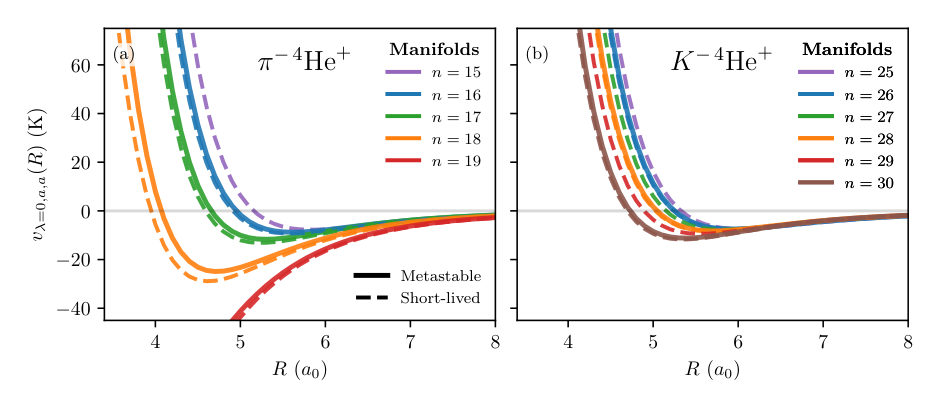
<figcaption class="paper-figure-caption"><b>Fig 2.</b> FIG. 2: Effective isotropic expansion coefficients, vλ=0,a,a(R), for the candidate states in (a) pionic helium (π−4He+) and (b) kaonic helium (K−4He+) interacting with an ordinary helium atom. Curves are grouped and color-coded by the principal quantum number n of the X−particle. Within each n-manifold, if present, solid lines denote the designated metastable state, while dashed lines represent the neighboring short-lived state participating in the transitions listed in Table I. The potential for the pionic (18, 17) state is omitted here to preserve visual clarity.</figcaption>
</figure>
<figure class="paper-figure-card">
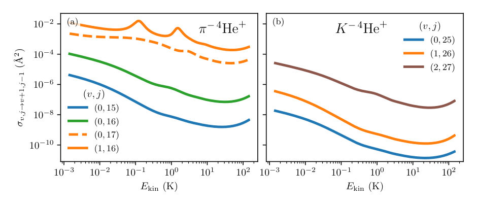
<figcaption class="paper-figure-caption"><b>Fig 3.</b> FIG. 3: Leading inelastic quenching cross sections, σ(v,j)→(v+1,j−1), originating from the three collisionally robust metastable states in (a) pionic helium and (b) kaonic helium. The color scheme matches the effective isotropic expansion coefficients of the PES presented in Fig. 2, where the initial metastable state for each transition corresponds to the solid line of the identical color. For the pionic n = 18 manifold (orange), we present cross-sections for both the metastable (v = 1, j = 16) state (solid line) and the experimentally relevant (v = 0, j = 17) state (dashed line), whose Auger lifetime is currently unavailable in the literature.</figcaption>
</figure>
<figure class="paper-figure-card">

<figcaption class="paper-figure-caption"><b>Fig 4.</b> FIG. 4: Pressure broadening (γ0) and pressure shift (δ0) coefficients for the transitions in π−4He+ considered in this work. The transitions are denoted by their molecular (va, ja) →(vb, jb) descriptors; see Table I for their exact correspondence to the atomic (na, la) →(nb, lb) nomenclature. Markers denote previous theoretical results (×, Ref. [25]).</figcaption>
</figure>
<figure class="paper-figure-card">

<figcaption class="paper-figure-caption"><b>Fig 5.</b> Fig. 4 also compares our results with the previous the- oretical calculations by Obreshkov et al. [25]. To ensure a direct comparison, we plot their calculations derived us- ing a coupled partial-wave approach on the “HN1” fit of the ab initio points (see Ref. [18] for details)—a method- ology conceptually equivalent to our own. We find over- all excellent agreement with these results. The only no- table discrepancy occurs in the pressure broadening of the (v = 0, j = 15) →(v = 1, j = 14) transition. We at- tribute this deviation to the refined ab initio grid of the new PES [20], which more accurately captures the molec- ular configurations relevant to the excited (v = 1, j = 14) state....</figcaption>
</figure>
</div>

<p><strong>Summary.</strong> This paper presents a comprehensive theoretical evaluation of density and collisional effects governing high-precision laser spectroscopy on exotic helium atoms, such as pionic and kaonic helium. Using advanced coupled-channel quantum scattering calculations, the authors derive essential benchmark values for pressure broadening and shifts. These results are crucial for future experiments aiming to test fundamental constants and determine the masses of particles like the pion and kaon.</p>
<p><strong>Why it may be interesting.</strong> This work is highly relevant as it pushes the boundaries of precision spectroscopy by providing the necessary theoretical corrections for complex many-body interactions in exotic atomic systems. It directly informs experimental feasibility in AMO physics.</p>
<details>
<summary>Detailed structure</summary>
<p><strong>Main problem.</strong> To provide a rigorous theoretical benchmark for high-precision laser spectroscopy on exotic helium atoms ($   ext{X}^-    ext{He}^+$) by calculating collisional and density effects.</p>
<p><strong>Main result.</strong> The authors provide theoretical reference values for the pressure broadening and shift coefficients for targeted transitions in pionic and kaonic helium, essential for future mass determinations.</p>
<p><strong>Method.</strong> The study employs coupled-channel quantum scattering calculations using an ab initio potential energy surface (PES) derived from super-molecular approaches.</p>
<p><strong>Model / system.</strong> The system involves exotic helium atoms ($  ext{X}^-    ext{He}^+$ where $  ext{X}^-$ is a heavy negative particle like $\pi^-$ or $K^-$) interacting with a cryogenic helium buffer gas. The physics tests three-body quantum electrodynamics.</p>
<p><strong>Key observables.</strong> Transition frequencies, pressure broadening coefficients ($\gamma_0$), and pressure shift coefficients ($\delta_0$).</p>
<p><strong>Important parameters / regimes.</strong> The required accuracy for spectroscopy is extremely high (e.g., $   ext{P} \propto 100  ext{ GHz}$ needed for $\pi^-	ext{He}^+$). Metastable states must survive Auger decay.</p>
<p><strong>Assumptions / limitations.</strong> Calculations are performed within the Born–Oppenheimer approximation, and line-shape calculations often utilize a single-state basis due to convergence tests showing negligible impact from nearest neighbors on broadening/shift parameters.</p>
<p><strong>Figures summary.</strong> Figures illustrate the physical state space of exotic helium atoms (Fig. 1) and show calculated pressure broadening ($ ext{Re}(\sigma_c)$) and shift ($    ext{Im}(\sigma_c)$) cross-sections for specific transitions in pionic and kaonic helium.</p>
<p><strong>Paper structure.</strong> The paper systematically addresses the need for theoretical benchmarks, first evaluating collisional stability against quenching, and then calculating the necessary line-shape parameters (broadening/shift coefficients) using advanced quantum scattering methods.</p>
</details>
<details>
<summary>Abstract</summary>
<p>Exotic helium atoms act as unique atomic traps for heavy, negatively charged particles, protecting them from nuclear annihilation and nuclear capture on timescales long enough to enable high-precision laser spectroscopy. Such measurements serve as stringent tests of three-body quantum electrodynamics and offer a direct route to determining fundamental particle masses. Motivated by upcoming spectroscopic efforts targeting pionic ($π^{-\,4}\mathrm{He}^+$) and kaonic ($K^{-\,4}\mathrm{He}^+$) helium, we present a rigorous theoretical evaluation of the collisional and density effects governing these systems. Using an ab initio potential energy surface and coupled-channel quantum scattering calculations, we study the collisional stability of the candidate metastable states against inelastic quenching in a cryogenic helium buffer gas. Furthermore, we provide theoretical reference values for the pressure broadening and pressure shift coefficients of the targeted transitions. These results establish an essential benchmark for future experiments, paving the way for refined determinations of the pion and kaon masses.</p>
</details>
<p><sub><a href="#top">↑ back to top</a></sub></p>

<p><a id="paper-2607.07554"></a></p>
<h3 id="rubriq-rubric-guided-group-relative-policy-optimization-for-constraint-aware-quantum-circuit-synthesis"><a href="http://arxiv.org/abs/2607.07554v1">RubriQ: Rubric-Guided Group Relative Policy Optimization for Constraint-Aware Quantum Circuit Synthesis</a></h3>
<p><strong>Authors:</strong> Ziqing Guo, Ziwen Pan<br>
<strong>Type:</strong> both · <strong>Category:</strong> quantum information and computing · <strong>PDF:</strong> <a href="https://arxiv.org/pdf/2607.07554v1">https://arxiv.org/pdf/2607.07554v1</a><br>
<strong>Analysis basis:</strong> full PDF text, analyzed in chunks
<strong>Topic relevance:</strong> <code>QC/QI experiment</code> <strong>1/5</strong> · <code>methods for driven-dissipative</code> <strong>1/5</strong></p>
<div class="figure-strip-hint">↔ Scroll figures horizontally</div>
<div class="paper-figures-scroll">
<figure class="paper-figure-card">

<figcaption class="paper-figure-caption"><b>Fig 1.</b> Fig. 1. RubriQ system architecture. The three-stage pipeline converts a natural-language prompt (1. system with user prompt encoding) into executable circuit code (2. autoregressive LLM generation with low-rank adaptation (LoRA) [33]) and a validated quantum circuit object (3. multi-strategy extraction). The rubric scoring engine (grey dashed box) supplies dense, bounded, deterministic rewards across five dimensions and GRPO policy update (pink box) enables critic-free, scalable policy gradients using group normalization. The circuits are validated on IBM and IonQ hardware; the full pipeline runs on NERSC Perlmutter A100 clusters.</figcaption>
</figure>
<figure class="paper-figure-card">

<figcaption class="paper-figure-caption"><b>Fig 2.</b> Fig. 2. Hardware topology comparison driving RubriQ compatibility score SH. Top: IBM Eagle/Heron heavy-hex lattice (degree ≤3); a CNOT between non-adjacent qubits q0 and q3 requires two SWAPs (6 extra two-qubit gates). Bottom: IonQ Forte/Aria all-to-all connectivity (degree = N−1); the same CNOT maps directly with zero routing overhead. RubriQ takes the maximum SH over backends, allowing the policy to discover backend-specific optimization strategies.</figcaption>
</figure>
<figure class="paper-figure-card">

<figcaption class="paper-figure-caption"><b>Fig 3.</b> Fig. 3. Per-step GRPO training flow. A prompt yields N=8 completions; parse failures receive R=0. The rubric engine scores each valid circuit across five dimensions and aggregates Ri. Group-relative normalization produces advantages ˆ Ai without a learned critic. The bar chart shows how GRPO amplifies high-reward circuits (green, right) and suppresses failures (red, left); dense rubric scoring keeps within-group dispersion high, enabling accurate ranking.</figcaption>
</figure>
<figure class="paper-figure-card">

<figcaption class="paper-figure-caption"><b>Fig 4.</b> Fig. 4. GPU-hours (A100) for a full training run as a function of circuit width, comparing RubriQ against Sparse-GRPO and Sparse-PPO. Solid lines: measured (nq≤8); dashed: projected (nq&gt;8). Background bands indicate HPC configuration: 1 node with 4 A100s (nq=2–5), 2 nodes with 8 A100s (nq=6–8), 2+ nodes with 8+ A100s (nq&gt;8). All three methods share the same per-epoch cost (dominated by O(4nq) fidelity simulation); the 2.6× gap reflects RubriQ faster convergence (15 vs. 40 epochs), directly translating to proportional GPU-hour savings at every qubit scale.</figcaption>
</figure>
<figure class="paper-figure-card">

<figcaption class="paper-figure-caption"><b>Fig 5.</b> Fig. 5. (a) T-gate compression C=T0/T(c) vs. epoch by dataset. (b) Train- ing and validation MSE; overlap indicates LoRA regularization rather than overfitting.</figcaption>
</figure>
</div>

<p><strong>Summary.</strong> This paper introduces RubriQ, a novel framework that uses Large Language Models guided by a multi-dimensional programmatic rubric to synthesize hardware-ready, fault-tolerant quantum circuits. By optimizing via Group Relative Policy Optimization (GRPO) and incorporating metrics like T-gate count and hardware topology directly into the reward function, it significantly outperforms existing methods in efficiency and fidelity.</p>
<p><strong>Why it may be interesting.</strong> While focused on quantum computation, the rigorous integration of physical constraints (topology, gate type) into an automated optimization loop provides a blueprint for designing complex quantum control sequences that must respect underlying physics.</p>
<details>
<summary>Detailed structure</summary>
<p><strong>Main problem.</strong> The primary challenge is designing fault-tolerant quantum circuits that are simultaneously algorithmically correct and compatible with specific physical hardware constraints.</p>
<p><strong>Main result.</strong> RubriQ achieves a significant mean T-gate compression of 3.31x compared to baselines, converges faster, and maintains low hardware constraint violations on real quantum processors.</p>
<p><strong>Method.</strong> The authors developed RubriQ, which frames circuit synthesis as an LLM code-generation task optimized using Group Relative Policy Optimization (GRPO). The reward signal is derived from a programmatic rubric evaluating multiple physical constraints.</p>
<p><strong>Model / system.</strong> The system targets quantum circuits for fault-tolerant computation on platforms like superconducting qubits (IBM) and trapped ions (IonQ). It uses an LLM fine-tuned via LoRA to generate OpenQASM/Qiskit code, which is then parsed into a circuit.</p>
<p><strong>Key observables.</strong> T-gate count compression ratio, hardware compliance score ($S_H$), Process Fidelity ($S_F$), Clifford fraction ($S_C$), and overall convergence speed (epochs).</p>
<p><strong>Important parameters / regimes.</strong> The optimization uses five weighted components in the rubric reward function; $N=8$ is selected as the optimal group size for GRPO.</p>
<p><strong>Assumptions / limitations.</strong> The method assumes that a multi-dimensional, programmatic rubric can effectively guide policy learning without relying on complex learned critics. Theoretical analysis suggests weight adaptation might be needed at high circuit complexity ($T_0 > 140$).</p>
<p><strong>Figures summary.</strong> Figures illustrate the full system architecture (three stages: prompt encoding, LLM generation, parsing) and compare hardware topologies to show how routing constraints impact the reward score.</p>
<p><strong>Paper structure.</strong> The paper details the three-stage pipeline (LLM $
ightarrow$ Parser $
ightarrow$ Rubric Evaluation), introduces GRPO for policy updates using a weighted sum of five component scores ($R = w_C S_C + \dots$), and validates performance against baselines on real hardware backends.</p>
</details>
<details>
<summary>Abstract</summary>
<p>Designing fault-tolerant quantum circuits that are both algorithmically correct and hardware compatible remains a major bottleneck in the transition to scalable quantum computing. We introduce RubriQ, a scalable framework that formulates circuit synthesis as a large language model (LLM) code-generation task, optimized via group relative policy optimization (GRPO). Unlike conventional black-box neural critics, RubriQ employs a domain-grounded programmatic rubric as the reinforcement learning reward function, evaluating circuits for T-gate reduction, hardware topology compliance, and unitary fidelity. To support high-throughput training, RubriQ integrates GPU-accelerated CUDA-Q simulation directly into the reinforcement learning (RL) loop and is deployed on NERSC Perlmutter using DeepSpeed ZeRO2 across multinode NVIDIA A100 clusters. On benchmark tasks, RubriQ achieves a mean T-gate compression of 3.31x, significantly outperforming sparse-reward RL baselines (2.05x), converging 2-3x faster, and maintaining less than 1\% hardware-constraint violations. Validated on IBM and IonQ quantum processors, RubriQ establishes an automated, high-performance computing (HPC)-driven pipeline for generating hardware-ready, fault-tolerant quantum circuits at scale.</p>
</details>
<p><sub><a href="#top">↑ back to top</a></sub></p>

<p><a id="paper-2607.06682"></a></p>
<h3 id="semi-device-independent-quantum-key-distribution-from-operational-assumptions"><a href="http://arxiv.org/abs/2607.06682v1">Semi-Device-Independent Quantum Key Distribution from Operational Assumptions</a></h3>
<p><strong>Authors:</strong> Anubhav Chaturvedi, Giuseppe Viola, Ekta Panwar, Tushita Prasad, Debashis Saha<br>
<strong>Type:</strong> theory · <strong>Category:</strong> quantum information and computing · <strong>PDF:</strong> <a href="https://arxiv.org/pdf/2607.06682v1">https://arxiv.org/pdf/2607.06682v1</a><br>
<strong>Analysis basis:</strong> full PDF text, analyzed in chunks
<strong>Topic relevance:</strong> <code>entanglement &amp; information structure</code> <strong>1/5</strong> · <code>quantum measurements</code> <strong>1/5</strong></p>
<div class="figure-strip-hint">↔ Scroll figures horizontally</div>
<div class="paper-figures-scroll">
<figure class="paper-figure-card">

<figcaption class="paper-figure-caption"><b>Fig 1.</b> FIG. 1. Three-setting retained-key protocol under an opera- tional source assumption. Alice emits one of four preparations satisfying TO(E) ≤τ, with T ∈{D, Π, D ⊕A, Π ⊕A}; in the security analysis O = Q. Bob uses y = 0, 1 for RAC testing, where the target is xy, and y = 2 for retained-key rounds on the branch xZ(0) = 00, xZ(1) = 11, where the target is the raw key bit K.</figcaption>
</figure>
<figure class="paper-figure-card">

<figcaption class="paper-figure-caption"><b>Fig 2.</b> FIG. 2. Operational source tasks and their relations. Boxes are the three optimized information-retrieval tasks on Alice’s four- preparation ensemble; shaded boxes are the two-setting com- posites used as exclusion-assisted source assumptions. Solid double arrow: coarse-graining relations between four-state and parity discrimination. Dashed arrows: the induced exclusion strategies of Eq. (3); all displayed relations are tight. By Proposition 1, A is not a function of (D, Π). The annotations give the exact classical RAC frontier of Theorem 1 for each source assumption on its stated domain.</figcaption>
</figure>
<figure class="paper-figure-card">

<figcaption class="paper-figure-caption"><b>Fig 3.</b> FIG. 3. Quantum deviation from the exact classical frontiers. Gray circles are level-Q3 upper bounds on ∆max T (t). Blue and orange curves are feasible preparation-depolarized and direct-sum leakage families; red stars mark ideal BB84. Green triangles in panel (a) are feasible d = 3 see-saw points, with the source-task value recomputed by its exact semidefinite program for the final ensemble.</figcaption>
</figure>
<figure class="paper-figure-card">

<figcaption class="paper-figure-caption"><b>Fig 4.</b> FIG. 4. Fixed distinguishability benchmark D ≤1/2. Gray and green curves are the earlier RAC-key Csiszár–Körner rates obtained from the RAC-output guessing bounds stated in the text. Orange and blue curves use the present retained- key protocol under the same operational source assumption: orange is the min-entropy certificate and blue is PM-BFF. The critical visibilities are νlin crit = 0.9659, νsq crit = 0.9428, νmin crit = 0.8895, and νBFF crit = 0.8741; the red star marks ideal BB84.</figcaption>
</figure>
<figure class="paper-figure-card">

<figcaption class="paper-figure-caption"><b>Fig 5.</b> FIG. 5. Source-depolarized BB84 key-rate lower bounds under four operational source assumptions. Dashed blue curves with open circles are PM-BFF bounds; solid orange curves are min-entropy bounds. The blue and orange axis stars are linear root estimates from the nearest validated samples of opposite sign and are not additional SDP evaluations. Lines connect accepted certificates; the red star marks ideal BB84.</figcaption>
</figure>
</div>

<p><strong>Summary.</strong> This paper develops a framework for Semi-Device-Independent Quantum Key Distribution by bounding the source preparation using operational assumptions rather than full device characterization. By analyzing four distinct task bounds, including exclusion-assisted measures, the authors derive strong security certificates that prove key rates remain positive even under significant imperfections. This advances the practical feasibility of QKD in realistic, imperfect quantum hardware.</p>
<p><strong>Why it may be interesting.</strong> The work provides rigorous, information-theoretic security proofs for QKD that are applicable even when device imperfections are partially unknown, which is crucial for practical quantum networking implementations.</p>
<details>
<summary>Detailed structure</summary>
<p><strong>Main problem.</strong> The research aims to advance Semi-Device-Independent Quantum Key Distribution (SDI-QKD) by relaxing the stringent requirements of full device characterization.</p>
<p><strong>Main result.</strong> The authors derive two dimension-independent security certificates using operational source assumptions, showing that exclusion-assisted bounds significantly improve key rates compared to identification-only methods.</p>
<p><strong>Method.</strong> They formulate source assumptions operationally as scalar bounds on four physically motivated tasks (e.g., full-label guessing, parity guessing) and employ prepare-and-measure semidefinite relaxations (PM-BFF) for entropy bounding.</p>
<p><strong>Model / system.</strong> The protocol is analyzed using a two-bit Random-Access Code (RAC) implemented over three settings: one pair for RAC testing and an additional setting for key generation. The security analysis focuses on the source preparation ensemble of Alice.</p>
<p><strong>Key observables.</strong> Conditional min-entropy, conditional von Neumann entropy, optimal success probabilities for four-state discrimination ($D$), parity discrimination ($\Pi$), and state exclusion ($A$).</p>
<p><strong>Important parameters / regimes.</strong> Preparation visibility ($
u$), dimension bounds (e.g., $d/4$ or $   au \le 1/2$), and the specific operational source assumption used.</p>
<p><strong>Assumptions / limitations.</strong> The core assumption is placing a trusted, operational bound on Alice's quantum source preparation ensemble, rather than requiring full characterization of all devices.</p>
<p><strong>Figures summary.</strong> Figure 1 illustrates the three-setting protocol structure. Figure 2 summarizes the relationships between the four tasks ($D, \Pi, A$) and their composite bounds.</p>
<p><strong>Paper structure.</strong> The paper establishes the operational framework by defining source assumptions via task bounds (e.g., $D$, $\Pi$). It then derives exact classical frontiers for a two-bit RAC. Finally, it extends this to a three-setting protocol to yield robust security certificates using advanced entropy bounding techniques.</p>
</details>
<details>
<summary>Abstract</summary>
<p>Semi-device-independent quantum key distribution leaves the measurement devices uncharacterized while placing a trusted assumption on Alice's source. We formulate this source assumption operationally on Alice's four-preparation ensemble as a scalar bound on one of four physically motivated source tasks: full-label guessing, parity guessing, or their normalized composites with label exclusion. For the two-bit random-access code, we derive the exact classical frontier for each of the four source assumptions. Numerically, the BB84 strategy attains the maximal quantum deviation from all four frontiers, while the preparation-depolarized BB84 family and the direct-sum label-leakage family trace complementary branches of the arbitrary-dimensional quantum boundary for the two exclusion-assisted assumptions. Because all four task values are monotone under input-independent quantum channels, the same scalar source bound constrains every Bob--Eve extension compatible with the complete observed behavior. Using a three-setting extension that separates RAC testing from key generation, we obtain two dimension-independent security certificates over this feasible set: lower bounds on the conditional min-entropy and conditional von Neumann entropy, obtained respectively by direct optimization of Eve's key-guessing probability and by prepare-and-measure semidefinite relaxations based on the Brown--Fawzi--Fawzi variational bound. The exclusion-assisted assumptions certify positive key rates down to nearly vanishing preparation visibility, far beyond full-label or parity guessing alone. Under direct-sum label leakage, all four independently optimized rate bounds remain positive at every sampled incomplete-leakage point and vanish only at complete label revelation. These results show that robust semi-device-independent security depends not only on what Eve can identify, but also on what she can exclude.</p>
</details>
<p><sub><a href="#top">↑ back to top</a></sub></p>

<p><a id="paper-2607.07203"></a></p>
<h3 id="wall-tension-of-a-bose-einstein-condensate-effects-of-quantum-fluctuations-and-finite-range-interactions"><a href="http://arxiv.org/abs/2607.07203v1">Wall tension of a Bose-Einstein condensate: Effects of quantum fluctuations and finite-range interactions</a></h3>
<p><strong>Authors:</strong> Pham Duy Thanh, Nguyen Van Thu<br>
<strong>Type:</strong> theory · <strong>Category:</strong> quantum gases · <strong>PDF:</strong> <a href="https://arxiv.org/pdf/2607.07203v1">https://arxiv.org/pdf/2607.07203v1</a><br>
<strong>Analysis basis:</strong> full PDF text, analyzed in chunks
<strong>Topic relevance:</strong> <code>Keldysh / 2PI / non-Gaussian methods</code> <strong>1/5</strong> · <code>analog quantum simulation</code> <strong>1/5</strong></p>
<div class="figure-strip-hint">↔ Scroll figures horizontally</div>
<div class="paper-figures-scroll">
<figure class="paper-figure-card">

<figcaption class="paper-figure-caption"><b>Fig 1.</b> FIG. 1. Condensate wave functions as functions of the reduced coordinate ˜x at αs = 10−3. The</figcaption>
</figure>
<figure class="paper-figure-card">

<figcaption class="paper-figure-caption"><b>Fig 2.</b> FIG. 2. Condensate wave functions as functions of the reduced coordinate ˜x at αs = 10−3 and re =</figcaption>
</figure>
<figure class="paper-figure-card">

<figcaption class="paper-figure-caption"><b>Fig 3.</b> Fig. 2 also shows the MGPII wave function at αs = 5 × 10−3 with re = 2as/3, corre-</figcaption>
</figure>
</div>

<p><strong>Summary.</strong> This paper theoretically examines how quantum fluctuations and finite interaction ranges affect the wall tension of a Bose-Einstein condensate confined by a hard boundary. By extending the Gross-Pitaevskii equation, the authors predict that QFs increase the tension while finite-range effects partially reduce it. These predictions offer an experimentally accessible method to probe advanced many-body physics in ultracold atomic gases.</p>
<p><strong>Why it may be interesting.</strong> This work provides a detailed theoretical roadmap for interpreting high-precision measurements of BEC interfaces, linking measurable quantities like wall tension directly to fundamental many-body physics beyond the standard mean-field theory (LHY and finite range).</p>
<details>
<summary>Detailed structure</summary>
<p><strong>Main problem.</strong> The study investigates how quantum fluctuations (QFs) and finite-range interatomic interactions modify the ground state properties, specifically the wall tension, of a Bose-Einstein condensate (BEC).</p>
<p><strong>Main result.</strong> QFs stiffen the BEC near a hard wall, increasing the wall tension above the mean-field prediction. Finite-range corrections partially counteract this enhancement, leading to an experimentally measurable ordering $\gamma_0 < \gamma_{II} < \gamma_I$.</p>
<p><strong>Method.</strong> The analysis employs successive approximations by modifying the Gross-Pitaevskii equation (GP) using formalisms like CJT for QFs and adding gradient terms for finite-range effects.</p>
<p><strong>Model / system.</strong> The system is a dilute gas of bosonic atoms forming a BEC confined by a hard wall at zero temperature. The theoretical framework evolves from the standard GP equation to modified versions incorporating LHY terms (QFs) and higher-order spatial derivatives (finite range).</p>
<p><strong>Key observables.</strong> Wall tension ($\gamma$), density profile ($n(x)$), healing length ($\xi$), and quantum depletion fraction.</p>
<p><strong>Important parameters / regimes.</strong> Gas parameter ($\alpha_s = na^3/s \ll 1$), effective range ratio ($r_e / 2a_s$), and the LHY correction parameter $\alpha_{1/2s}$.</p>
<p><strong>Assumptions / limitations.</strong> The analysis relies on perturbative expansions in the gas parameter and assumes specific functional forms for incorporating QFs and finite-range corrections.</p>
<p><strong>Figures summary.</strong> Figure 1 compares wave functions from GP vs. MGPI, showing a density notch change; Figure 2 likely compares wave functions across GP, MGPI, and MGPII solutions.</p>
<p><strong>Paper structure.</strong> The paper builds theoretically by first establishing the mean-field (GP) baseline, then incorporating QFs via the Modified GP Equation (MGPI), and finally refining this model with finite-range corrections leading to MGPII. The results are presented through quantitative comparisons of derived wall tension formulas.</p>
</details>
<details>
<summary>Abstract</summary>
<p>We investigate the effects of quantum fluctuations (QFs) and finite-range interatomic interactions on the ground state and wall tension of a Bose-Einstein condensate (BEC) at zero temperature by means of modified Gross-Pitaevskii equations. The QFs are shown to stiffen the condensate near the hard wall, narrowing the density profile and raising the wall tension above its mean-field value by an amount proportional to square-root of the gas parameter. Finite-range corrections always reduces the wall tension relative to the QFs correction value regardless of the effective range. We find the ordering $γ_0 < γ_{\rm II} < γ_{\rm I}$ in the dilute regime and identify a crossover condition under which the two beyond-mean-field contributions mutually cancel. These results provide an experimentally accessible way for probing beyond-LHY physics through precision measurements of the wall tension in ultracold Bose gases.</p>
</details>
<p><sub><a href="#top">↑ back to top</a></sub></p>

<p><a id="paper-2607.07067"></a></p>
<h3 id="ab-initio-thermodynamic-statistical-modeling-of-the-miscibility-gap-and-the-metal-insulator-phase-transition-in-srtimath848mathvmath849mathomath850math"><a href="http://arxiv.org/abs/2607.07067v1">Ab initio thermodynamic statistical modeling of the miscibility gap and the metal-insulator phase transition in SrTi$_{1-x}$V$_x$O$_{3}$</a></h3>
<p><strong>Authors:</strong> Luka Wibmer, Chiara Ostendorf, Dominik Spath, Christoph Heil, Pedro N. Ferreira, Markus Aichhorn<br>
<strong>Type:</strong> theory · <strong>Category:</strong> strongly correlated electrons · <strong>PDF:</strong> <a href="https://arxiv.org/pdf/2607.07067v1">https://arxiv.org/pdf/2607.07067v1</a><br>
<strong>Analysis basis:</strong> full PDF text, analyzed in chunks
<strong>Topic relevance:</strong> <code>Keldysh / 2PI / non-Gaussian methods</code> <strong>1/5</strong></p>
<div class="figure-strip-hint">↔ Scroll figures horizontally</div>
<div class="paper-figures-scroll">
<figure class="paper-figure-card">

<figcaption class="paper-figure-caption"><b>Fig 1.</b> Figure 1. Lattice parameter a of SrTi1−xVxO3 as a function of com- position. Both the GQCA average and experimental measurements [8–10] are depicted. The gray shaded area shows the GQCA stan- dard deviation.</figcaption>
</figure>
<figure class="paper-figure-card">

<figcaption class="paper-figure-caption"><b>Fig 2.</b> Figure 2. Thermodynamic properties of SrTi1−xVxO3 as a function of composition. (a) Excess enthalpies ∆j. (b) Mixing enthalpy ∆H, (c) configurational entropy T∆S and (d) Gibbs mixing free energy ∆G at different Temperatures from 400 K to 2000 K. (e) The miscibility gap with binodal and spinodal lines.</figcaption>
</figure>
<figure class="paper-figure-card">

<figcaption class="paper-figure-caption"><b>Fig 3.</b> Fig. 2(e) shows the calculated miscibility gap for SrTi1−xVxO3. We predict a critical temperature of 1443 K. Experimental information on the phase equilibria of this sys- tem is rather limited. As far as we could identify, no thermo- dynamic assessment or phase diagram has been reported for the Sr–Ti–V–O quaternary system. SrTi1−xVxO3 solid solu- tions have been synthesized using several different methods, including powders treated at 1250 K under flowing H2 fol- lowed by hydrostatic pressing [8], solid-state synthesis of pel- lets heated at T ≈1800 K [9], and different thin-film growth techniques [10–12].</figcaption>
</figure>
<figure class="paper-figure-card">

<figcaption class="paper-figure-caption"><b>Fig 4.</b> Figure 3. Electronic density of states at the Fermi level taken from the DFT calculation and the spectral function A(ω) at ω = 0 of SrTi1−xVxO3 as a function of composition. Both the GQCA aver- age and the individual cluster values are plotted. The gray shaded area shows the GQCA standard deviation.</figcaption>
</figure>
<figure class="paper-figure-card">

<figcaption class="paper-figure-caption"><b>Fig 5.</b> Figure 4. Vanadium-projected GQCA averaged spectral function A(ω) for different compositions x in SrTi1−xVxO3. Each spectral function is shifted vertically by 0.1 eV−1 for better visibility. Note that only the vanadium-projected part is shown, that is why for x = 0.0 the spectral function is identically zero.</figcaption>
</figure>
</div>

<p><strong>Summary.</strong> This work develops a thermodynamically rigorous framework, the Generalized Quasi-Chemical Approximation (GQCA), to model disordered alloys like SrTi1-xV xO3. By averaging properties over all possible atomic arrangements, the authors accurately predict both the miscibility gap and the composition-driven metal-insulator transition using DMFT and percolation theory.</p>
<p><strong>Why it may be interesting.</strong> The methodology of using statistical thermodynamics (GQCA) to correctly average over local chemical disorder when modeling correlated electron systems is highly relevant for understanding complex materials where structural randomness dictates electronic behavior, bridging concepts from condensed matter stat-mech and strongly correlated physics.</p>
<details>
<summary>Detailed structure</summary>
<p><strong>Main problem.</strong> The study addresses the composition-driven metal-insulator transition (MIT) and miscibility gap in the disordered perovskite alloy SrTi1-xV xO3.</p>
<p><strong>Main result.</strong> The authors successfully reproduce the MIT using a thermodynamically consistent, configuration-averaged framework, finding the transition onset near x=0.4 via percolation analysis.</p>
<p><strong>Method.</strong> They employ the Generalized Quasi-Chemical Approximation (GQCA) combined with Dynamical Mean-Field Theory (DMFT) to average properties over all possible atomic configurations.</p>
<p><strong>Model / system.</strong> The system is the substitutional solid solution SrTi1-xV xO3, which interpolates between a band insulator (SrTiO3) and a correlated metal (SrVO3). The model treats disorder by averaging cluster properties weighted by Gibbs free energy minimization.</p>
<p><strong>Key observables.</strong> Miscibility gap critical temperature (1443 K), density of states at the Fermi level, and system-spanning conduction onset via site percolation.</p>
<p><strong>Important parameters / regimes.</strong> The Hubbard interaction parameters (U=4 eV, J=0.65 eV) are used in the DMFT calculation; the analysis spans the full composition range x from 0 to 1.</p>
<p><strong>Assumptions / limitations.</strong> The primary assumption is that material properties can be accurately calculated as an ensemble average over statistically weighted clusters using the GQCA framework, which overcomes limitations of single supercell calculations.</p>
<p><strong>Figures summary.</strong> Figures illustrate the lattice parameter following Vegard's law and show the miscibility gap boundaries derived from $\Delta G(x, T)$ analysis. Partial density of states plots demonstrate bandwidth changes as composition varies.</p>
<p><strong>Paper structure.</strong> The paper first establishes the need for a configuration-averaged approach (GQCA) to model disorder. It then calculates thermodynamic properties ($\Delta G$) revealing the miscibility gap. Finally, it combines this ensemble average with DMFT and percolation theory to track the electronic transition across the composition range.</p>
</details>
<details>
<summary>Abstract</summary>
<p>The substitutional alloy SrTi$_{1-x}$V$_x$O$_3$ interpolates between the band insulator SrTiO$_3$ and the correlated metal SrVO$_3$, exhibiting a composition-driven metal--insulator transition whose origin combines Mott physics with local chemical disorder. Previous first-principles studies relied on individual supercells, which cannot capture the thermally disordered solid solution, since configurations of identical composition can display very different electronic properties. Here we treat the alloy within a generalized quasi-chemical approximation, a thermodynamically consistent statistical framework in which every property is obtained as an ensemble average over all symmetry-inequivalent clusters, weighted by occurrence probabilities that minimize the Gibbs mixing free energy. This provides a well-defined procedure to average over different supercells, and places the structural and electronic descriptions on an equal footing. From the mixing thermodynamics we obtain a miscibility gap with a critical temperature of 1443 K, consistent with experimental evidence. Combining the cluster ensemble with dynamical mean-field theory, we track the density of states at the Fermi level across the full composition range: whereas density-functional theory alone predicts a metal for all $x>0$, the correlated spectral function reproduces the transition, evolving from insulating below $x\approx0.3$ to metallic near $x=1$. Finally, classifying clusters as metallic or insulating and performing site percolation on a simple cubic lattice yields a sharp onset of system-spanning conduction near $x\approx0.4$. These results establish a thermodynamically consistent, configuration--averaged framework applicable to the broader class of correlated materials.</p>
</details>
<p><sub><a href="#top">↑ back to top</a></sub></p>

<p><a id="paper-2607.07691"></a></p>
<h3 id="faster-quantum-linear-system-solver-beyond-the-condition-number"><a href="http://arxiv.org/abs/2607.07691v1">Faster quantum linear system solver beyond the condition number</a></h3>
<p><strong>Authors:</strong> Alexander M. Dalzell, Jianqiang Li, Yuan Su<br>
<strong>Type:</strong> theory · <strong>Category:</strong> quantum information and computing · <strong>PDF:</strong> <a href="https://arxiv.org/pdf/2607.07691v1">https://arxiv.org/pdf/2607.07691v1</a><br>
<strong>Analysis basis:</strong> full PDF text, analyzed in chunks
<strong>Topic relevance:</strong> <code>analog quantum simulation</code> <strong>1/5</strong></p>
<div class="figure-strip-hint">↔ Scroll figures horizontally</div>
<div class="paper-figures-scroll">
<figure class="paper-figure-card">

<figcaption class="paper-figure-caption"><b>Fig 1.</b> Figure 1: Illustration of the definition of effective condition number. The step function represents the cumulative distribution of the squared inverse singular values of A weighted by the initial state |b⟩. The effective condition number κeff is defined so that the total weight below 1/κeff (red region) is at most ϵ2.</figcaption>
</figure>
<figure class="paper-figure-card">

<figcaption class="paper-figure-caption"><b>Fig 2.</b> Figure 2: Illustration of the algorithmic template for constructing beyond-κ solvers based on effective trun- cation of the linear system.</figcaption>
</figure>
<figure class="paper-figure-card">

<figcaption class="paper-figure-caption"><b>Fig 3.</b> Figure 3: A non-decreasing function and its generalized inverses. Plateaus of f become jumps, and jumps of f become plateaus. The only difference between f + and f −is the one-sided continuity at discontinuities.</figcaption>
</figure>
<figure class="paper-figure-card">

<figcaption class="paper-figure-caption"><b>Fig 4.</b> Figure 5: Qualitative behavior of g(γ) for constant-prefactor optimization for the filtering-based solver.</figcaption>
</figure>
</div>

<p><strong>Summary.</strong> This paper introduces two novel quantum algorithms designed to solve the linear system $Ax=|b
angle$ with computational complexity that bypasses the limitations imposed by the spectral condition number $\kappa$. By introducing and utilizing an 'effective condition number' ($\kappa_{	ext{eff}}$), the solvers achieve significantly faster query scaling, representing a major algorithmic improvement for quantum simulation applications.</p>
<p><strong>Why it may be interesting.</strong> This work provides fundamental algorithmic advances in quantum linear algebra, which is a core subroutine for many physical simulations (e.g., solving Hamiltonians or finding ground states) relevant to AMO physics and condensed matter theory.</p>
<details>
<summary>Detailed structure</summary>
<p><strong>Main problem.</strong> The primary goal is developing quantum algorithms to solve linear systems of equations, $Ax=|b
angle$, that achieve a computational complexity independent of the spectral condition number $\kappa$.</p>
<p><strong>Main result.</strong> Two new solvers—one truncation-based and one filtering-based—are presented, achieving query complexities that scale with an 'effective condition number' ($\kappa_{	ext{eff}}$) or vector norms, thereby overcoming the traditional $\kappa$-barrier.</p>
<p><strong>Method.</strong> The authors introduce advanced quantum techniques involving effective truncation of the linear system and eigenstate filtering over the unit circle. They derive rigorous upper bounds for $\kappa_{	ext{eff}}$ to quantify this improved scaling.</p>
<p><strong>Model / system.</strong> The problem is framed within quantum computation models, analyzed under two input representations: the standard block encoding model and a more general affine dilation model that jointly encodes $A$ and $|b
angle$.</p>
<p><strong>Key observables.</strong> Effective condition number ($\kappa_{	ext{eff}}$), solution vector norm ($\|x\|$ ), and the required computational query complexity.</p>
<p><strong>Important parameters / regimes.</strong> Target accuracy $\epsilon$, spectral condition number $\kappa$, and various derived parameters like $\alpha$ used in truncation bounds.</p>
<p><strong>Assumptions / limitations.</strong> The analysis relies on defining and bounding $\kappa_{	ext{eff}}$ through specific mathematical transformations of the singular values, and assumes availability of relative approximations for the solution norm $\|x\|$ to achieve optimal scaling.</p>
<p><strong>Figures summary.</strong> Figure 1 illustrates the concept of $\kappa_{	ext{eff}}$ using cumulative distribution weights; Table 1 compares the query complexities of various quantum solvers against this new work.</p>
<p><strong>Paper structure.</strong> The paper reviews existing solvers dependent on $\kappa$, introduces the concept and bounds for $\kappa_{	ext{eff}}$, details two novel algorithms (truncation-based and filtering-based), proves their complexity improvements, and concludes by comparing them to prior state-of-the-art methods.</p>
</details>
<details>
<summary>Abstract</summary>
<p>The spectral condition number is a widely adopted measure of worst-case cost for quantum linear system solvers. Yet it can significantly overestimate the actual runtime for a typical problem instance. We present two quantum algorithms that produce the normalized solution $|x\rangle$ of linear system $Ax=| b \rangle$ to accuracy $ε$ with complexity independent of the condition number $κ=\lVert A^{-1}\rVert$. We focus on the standard input model where $A$ is accessed through a block encoding and $| b \rangle$ is prepared by a unitary. But we also introduce an affine dilation model that encodes $A$ and $| b \rangle$ jointly, allowing further refinements of the query complexity. Our truncation-based solver makes an optimal number of queries to $| b \rangle$ and $\operatorname{\mathbf{O}}\left(κ_{\mathrm{eff}}\operatorname{polylog}\left(\frac{κ_{\mathrm{eff}}}ε\right)\right)$ queries to $A$. We prove a family of upper bounds on the effective condition number, including $κ_{\mathrm{eff}}\leq\frac{\lVert(A^\dagger A)^{-t/2}|x\rangle\rVert^{1/t}}{ε^{1/t}}$ for positive even integer $t$ and $κ_{\mathrm{eff}}\leq\frac{\lVert A^{-1\dagger}(A^\dagger A)^{-(t-1)/2}|x\rangle\rVert^{1/t}}{ε^{1/t}}$ for positive odd $t$, overcoming the $κ$-barrier. Our filtering-based solver is extremely simple with a favorable runtime prefactor. In particular, the solver has query complexity $6\frac{\lVert A^{-1\dagger}|x\rangle\rVert}ε\ln\left(\frac{1}ε\right)$ to leading order when the solution norm is known. We then present a similarly simple solution norm estimator with the same asymptotic cost up to logarithmic factors. Our quantum linear system solvers thus substantially improve a recent algorithm of Li, enabling faster quantum linear system solving beyond the condition number.</p>
</details>
<p><sub><a href="#top">↑ back to top</a></sub></p>

<p><a id="paper-2607.07310"></a></p>
<h3 id="pressure-induced-pt-symmetry-breaking-in-lamnsi"><a href="http://arxiv.org/abs/2607.07310v1">Pressure-induced PT Symmetry Breaking in LaMnSi</a></h3>
<p><strong>Authors:</strong> Takuya Aoyama, Hikaru Taneoka, Takemi Yamada, Hiroshi Tanida, Kenya Ohgushi<br>
<strong>Type:</strong> both · <strong>Category:</strong> strongly correlated electrons · <strong>PDF:</strong> <a href="https://arxiv.org/pdf/2607.07310v1">https://arxiv.org/pdf/2607.07310v1</a><br>
<strong>Analysis basis:</strong> full PDF text, analyzed in chunks
<strong>Topic relevance:</strong> <code>driven-dissipative phase transition</code> <strong>1/5</strong></p>
<div class="figure-strip-hint">↔ Scroll figures horizontally</div>
<div class="paper-figures-scroll">
<figure class="paper-figure-card">

<figcaption class="paper-figure-caption"><b>Fig 1.</b> FIG. 1. (a) Crystal and magnetic structures of LaMnSi visu- alized using the VESTA tool [20]. Temperature (T) depen- dence of (b) the electrical resistivity (ρxx) and (c) dρ dT above 6.5 GPa, under high pressures. Open diamonds and triangles indicate the antiferromagnetic and ferromagnetic transitions, respectively. (d) Pressure dependence of electrical resistivity scaled by the value at 0.5 GPa, ρ(T, P)/ρ(T, 0.5 GPa).</figcaption>
</figure>
<figure class="paper-figure-card">

<figcaption class="paper-figure-caption"><b>Fig 2.</b> FIG. 2. Magnetoresistance (upper) and Hall resistivity (lower) at selected pressures of (a) 4.5, (b) 6.0, (c) 7.0, (d) 8.0, and (e) 10 GPa (Run 1). The electric current was applied along the 100 axis, and the magnetic field was applied along the 001 axis. The data were collected after field cooling with 9 T from room temperature. (f) Temperature–pressure phase diagram for LaMnSi. The open diamonds and triangles indicate TN and Tc, respectively. The Hall resistivity at B = 0 is superimposed as a contour plot. PM, AFM, and FM indicate the paramagnetic, antiferromagnetic, and ferromagnetic states, respectively.</figcaption>
</figure>
<figure class="paper-figure-card">

<figcaption class="paper-figure-caption"><b>Fig 3.</b> FIG. 3. Temperature dependence of the electrical conductiv- ity and Hall conductivity collected under several pressures. The inset shows a plot of σxx versus σxy. The gray lines indicate the power law of σxy ∝σα xx, with α = 1.6. The hor- izontal broken line indicates σxy = e2/(ha) = 926 Ω−1cm−1, with a = 4.18 ˚A</figcaption>
</figure>
<figure class="paper-figure-card">

<figcaption class="paper-figure-caption"><b>Fig 4.</b> FIG. 4. Band structures (upper) and energy-dependent spin orbital occupancy of Mn 3d states below the Fermi level (lower) for LaMnSi. In the band structures, the up- and down- spin components of the Mn1 atom are represented by the sizes of the red and blue circles, respectively. Only the Mn1 atom is shown because the relations Mn2↑= Mn1↑and Mn2↓= Mn1↓hold in the FM state, whereas Mn2↑= Mn1↓and Mn2↓ = Mn1↑hold in the AFM state. Calculations assume the (a, c) AFM (B1u) and (b, d) FM (A2g) states.</figcaption>
</figure>
</div>

<p><strong>Summary.</strong> This work explores how applying high pressure forces a quantum phase transition in LaMnSi, moving it from a PT-symmetric antiferromagnetic state to a PT-broken ferromagnetic state. This transition is experimentally marked by the emergence of a large anomalous Hall effect, which is theoretically linked to changes in spin polarization within the Mn $3d$ electronic bands.</p>
<p><strong>Why it may be interesting.</strong> The explicit connection drawn between external tuning (pressure) and fundamental symmetries ($   ext{PT}$ symmetry breaking) in determining electronic transport properties makes this highly relevant to understanding topological phases in condensed matter systems.</p>
<details>
<summary>Detailed structure</summary>
<p><strong>Main problem.</strong> The study investigates how applying high pressure drives a quantum phase transition in the antiferromagnetic metal LaMnSi, specifically focusing on the breaking of combined PT symmetry.</p>
<p><strong>Main result.</strong> High pressure suppresses the initial PT-symmetric AFM state, inducing a transition to a PT-broken FM state characterized by a large anomalous Hall effect (AHE).</p>
<p><strong>Method.</strong> The research combines electrical transport measurements (magnetotransport) under varying pressure and temperature with first-principles DFT calculations for electronic structure analysis.</p>
<p><strong>Model / system.</strong> The physical system is the antiferromagnetic metal LaMnSi, which undergoes a structural/magnetic transition driven by external pressure. The analysis models the magnetic order using symmetry group theory ($  ext{B}<em 2g>{1u}$ vs $   ext{A}</em>$) and electronic properties via DFT band structure calculations.</p>
<p><strong>Key observables.</strong> Anomalous Hall Effect (AHE), magnetotransport coefficients ($
ho_{yx}$, $\sigma_{xy}$), resistivity anomalies, and the magnetic ordering state (AFM to FM).</p>
<p><strong>Important parameters / regimes.</strong> High pressure ($P \ge 5 	ext{ GPa}$), temperature ($T$), and the in-plane Mn–Mn interatomic distance.</p>
<p><strong>Assumptions / limitations.</strong> The analysis assumes that transport anomalies correlate directly with symmetry breaking, and DFT calculations are used to model the electronic consequences of proposed magnetic structures.</p>
<p><strong>Figures summary.</strong> Figures show phase diagrams mapping $(	ext{PM}, 	ext{AFM}, 	ext{FM})$ regions based on $
ho_{yx}$ vs $B$, alongside plots detailing temperature/pressure dependence of conductivity ($\sigma_{xx}$, $\sigma_{xy}$) and band structure asymmetry.</p>
<p><strong>Paper structure.</strong> The paper proceeds by first characterizing the ambient-pressure PT-symmetric AFM state via transport measurements, then demonstrating that increasing pressure drives a transition to a symmetry-broken FM phase evidenced by AHE. This is supported by theoretical DFT calculations confirming orbital-dependent spin polarization changes across the transition.</p>
</details>
<details>
<summary>Abstract</summary>
<p>We investigate the magnetotransport properties of the antiferromagnetic metal LaMnSi, in which the collinear magnetic order breaks both spatial inversion (P) and time-reversal (T) symmetry yet preserves their combined PT symmetry. High pressure is found to suppress this PT-symmetric antiferromagnetic phase, inducing a transition into a PT-broken state characterized by a large anomalous Hall effect. Based on symmetry analysis, we propose a candidate magnetic structure for the high-pressure phase. Subsequent band calculations for this structure reveal the emergence of band splitting and orbital-dependent spin polarization. Our results establish LaMnSi as an ideal platform for controlling PT symmetry breaking via external parameters.</p>
</details>
<p><sub><a href="#top">↑ back to top</a></sub></p>

<p><a id="paper-2607.07634"></a></p>
<h3 id="qcnn-with-rough-path-signature-kernels"><a href="http://arxiv.org/abs/2607.07634v1">QCNN with Rough Path Signature Kernels</a></h3>
<p><strong>Authors:</strong> Leonardo Nogueira Falabella, Vasily Sazonov<br>
<strong>Type:</strong> both · <strong>Category:</strong> quantum information and computing · <strong>PDF:</strong> <a href="https://arxiv.org/pdf/2607.07634v1">https://arxiv.org/pdf/2607.07634v1</a><br>
<strong>Analysis basis:</strong> full PDF text, analyzed in chunks
<strong>Topic relevance:</strong> <code>QC/QI experiment</code> <strong>1/5</strong></p>
<div class="figure-strip-hint">↔ Scroll figures horizontally</div>
<div class="paper-figures-scroll">
<figure class="paper-figure-card">

<figcaption class="paper-figure-caption"><b>Fig 1.</b> Figure 1: Schematic diagram for the hybrid quantum-classical classification pipeline.</figcaption>
</figure>
<figure class="paper-figure-card">

<figcaption class="paper-figure-caption"><b>Fig 2.</b> Figure 2: Schematic representation of the QCNN architecture applied to an 8-qubit system. The pipeline integrates a fixed quantum data encoding stage followed by three alternating layers of parameterized convolutional filters (li denotes the number of filters in layer i) and pooling operations executed in a translationally invariant manner.</figcaption>
</figure>
<figure class="paper-figure-card">

<figcaption class="paper-figure-caption"><b>Fig 3.</b> Figure 3: Circuit scheme of the extra qubit kernel architecture, exemplified with RY and CNOT gates as convolutional filters and parametrized pooling layers, corresponding to the architecture extended U15, described above.</figcaption>
</figure>
<figure class="paper-figure-card">

<figcaption class="paper-figure-caption"><b>Fig 4.</b> Figure 4: Scalability benchmarks for the VQLS framework across varying path compression levels: (a) Optimization trajectories of the local cost function CL(θ), and (b) The corresponding evolution of the overlap fidelity as a function of the system dimension.</figcaption>
</figure>
<figure class="paper-figure-card">

<figcaption class="paper-figure-caption"><b>Fig 5.</b> Figure 5: Visual analysis of the MNIST sequence dataset: (a) Characteristic downsampled pen-tip trajectories for the binary classification task, (b) Full signature kernel matrices generated by the SigKernel architecture, evaluated against a fixed reference sample Xref representing a digit 0.</figcaption>
</figure>
</div>

<p><strong>Summary.</strong> The paper proposes a novel hybrid approach combining path signature kernels—a mathematical tool invariant to time reparameterization—with Quantum Convolutional Neural Networks (QCNNs) for classifying time series data. While the full implementation relies on Variational Quantum Linear Solvers (VQLS), scalability issues limit its use, leading the authors to compare architectural designs using classical kernel computation alongside quantum feature extraction.</p>
<p><strong>Why it may be interesting.</strong> This work is interesting because it attempts to bridge advanced geometric/topological data analysis (rough paths) with near-term quantum machine learning models (QCNNs), providing a concrete, albeit challenged, roadmap for applying quantum computation to complex physical time series data.</p>
<details>
<summary>Detailed structure</summary>
<p><strong>Main problem.</strong> The core challenge is performing time series classification while overcoming the inherent difficulty posed by time reparametrization invariance in the data.</p>
<p><strong>Main result.</strong> The authors demonstrate that a hybrid quantum-classical architecture using path signature kernels followed by QCNNs shows potential, although current VQLS implementations are limited by scalability issues on near-term hardware.</p>
<p><strong>Method.</strong> They propose integrating the mathematically robust signature kernel (which handles time reparametrization) into a Quantum Convolutional Neural Network (QCNN) framework. The kernel evaluation is attempted using Variational Quantum Linear Solvers (VQLS).</p>
<p><strong>Model / system.</strong> The system involves analyzing time series data, such as handwritten digits, by first calculating the signature kernel between input paths and then feeding these features into a QCNN structure.</p>
<p><strong>Key observables.</strong> Classification accuracy for binary tasks (e.g., 0-vs-1), Overlap Fidelity ($\epsilon$), and matrix condition number ($\kappa$) related to VQLS performance.</p>
<p><strong>Important parameters / regimes.</strong> The complexity scales are noted: QCNN depth/parameters scale as $O(\log n)$, while VQLS struggles with large system sizes ($N 	imes N$ matrices) derived from long trajectories.</p>
<p><strong>Assumptions / limitations.</strong> Key limitations include the impracticality of using VQLS for realistic, long-trajectory data due to $\kappa$ inflation and hardware constraints; thus, classical computation is often used for final benchmarks.</p>
<p><strong>Figures summary.</strong> Figures illustrate the hybrid pipeline (Fig 1), the QCNN circuit structure (Fig 2), the auxiliary qubit kernel architecture (Fig 3), VQLS scalability issues (Fig 4), and comparative classification results across different architectural setups (Fig 6).</p>
<p><strong>Paper structure.</strong> The paper introduces the problem of time series invariance, details the mathematical tool (signature kernel) derived from solving a PDE, proposes the hybrid QCNN-Signature architecture, discusses implementing the kernel via VQLS on quantum circuits, and concludes with experimental results comparing various architectural configurations.</p>
</details>
<details>
<summary>Abstract</summary>
<p>Time series analysis plays a vital role across a wide range of scientific and engineering domains but poses substantial computational challenges. A major difficulty arises from the time reparameterization invariance of time series data, which complicates the extraction of meaningful temporal features. In this work, we address the problem of time series classification by exploring the application of quantum computation techniques. We propose a hybrid quantum-classical architecture that integrates recent advances in quantum neural networks with the mathematical framework of path signatures, mitigating the impact of time reparametrization invariance. The architecture employs feature layers that compute a signature kernel between pairs of input paths, consisting of a reference path and a target path for classification, using either classical or quantum variational linear solvers (VQLS). These feature layers are followed by a Quantum Convolutional Neural Network (QCNN) to perform downstream learning tasks. We evaluate several realizations of the proposed architecture, differing in QCNN configurations, on a binary classification task involving time series representations of handwritten digits. Our experiments demonstrate the potential advantages of implementing path signature kernel layers within quantum circuits and provide an analysis of the computational limitations associated with the VQLS component.</p>
</details>
<p><sub><a href="#top">↑ back to top</a></sub></p>
<hr>
<p>
<a href="index.html">← Index</a>
 · <a href="papers_04.html">← Previous</a> · <a href="papers_06.html">Next →</a>
</p>
<hr>

</body>
</html>
